Generated by tools/gen_sheets.py (Gemini API). Each is checked with the cutter's own code
(tools/camp_sheet.py): the pieces it finds against those expected, the art pixel pitch, pixels in a
signal's yellow/orange/red, the magenta cast. Projection (front-on, never isometric) is for the eye. Pick one with
the command under it.
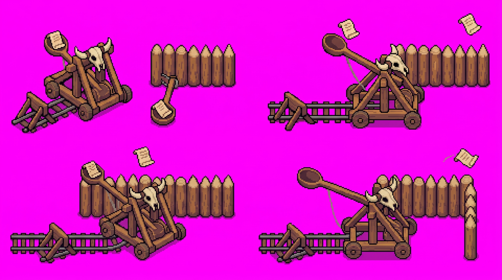
python tools/gen_sheets.py --pick b1-catapult 1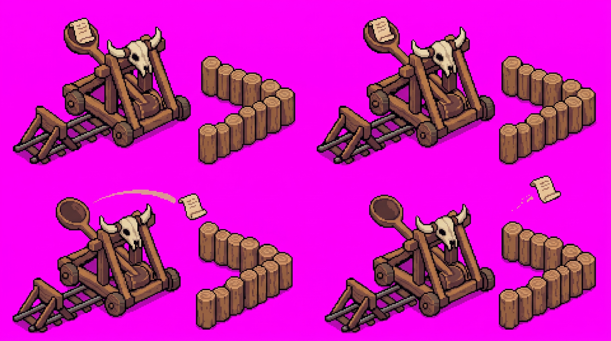
python tools/gen_sheets.py --pick b1-catapult 2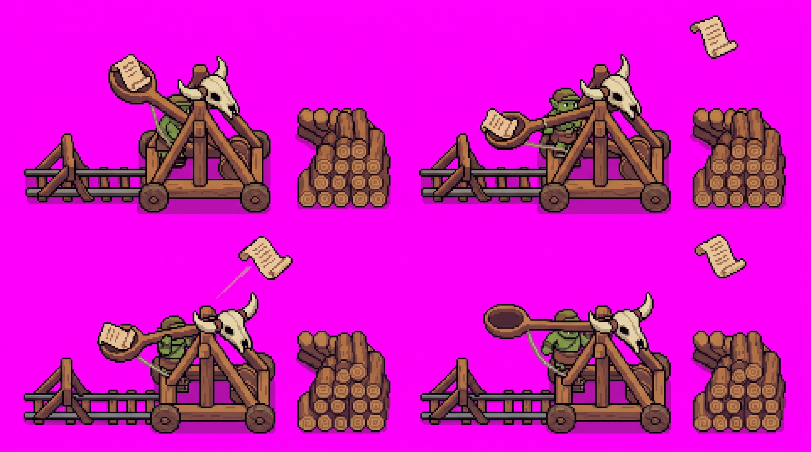
python tools/gen_sheets.py --pick b1-catapult 3No shadows. Pixel-art sprite sheet in exactly the style and palette of the attached image. Crisp hard pixels on a strict grid, no anti-aliasing, no blur, no gradients, each sprite with a dark 1-pixel outline, drawn at its final size with no finer detail than that size can hold. One three-quarter top-down projection, never isometric. Sprites in a neat grid with even spacing on a flat solid #FF00FF magenta background, nothing touching, no ground under them, no text unless asked. Bright yellow and bright red appear nowhere. A crude orc wooden catapult in side view, facing right, standing against a low wall of rounded logs on its right, at a log buffer stop where a mine-cart track ends coming in from the left, a cow skull on its frame, bone tusks on the base, its arm and bucket with a scroll; four frames in one row: resting; pulled back; mid-throw; the scroll flying up and to the right over the wall. About 160 px wide. The frame of the catapult drawn with its front parallel to the image's bottom edge (the one side view of the camp). Every building faces the viewer: its front wall parallel to the bottom edge of the image, the door in the middle of the front, seen slightly from above, exactly like the task board in the attached sheet b1-core. Never turned at an angle, never isometric. No ground under the building: no patch of grass, no base square, no plinth of earth. No frames, no boxes, no grid lines, no borders between sprites; each sprite floats alone on the magenta. No shadows, no smoke, no glow. Keep exactly the colours of the attached frame F1: the grass as saturated and bright as in it (about #7cbd40), the paths warm sand (about #e4b469); warm honey wood, light cool stone, teal and plum cloth, cream bone. No yellow, no orange and no red anywhere: those colours are reserved for the product's signals. Output the sheet as a PNG image. Attached, in order: f1-town, b1-core. F1 is the approved frame: its style and colours rule. References: f1-town.jpg, b1-core.jpg
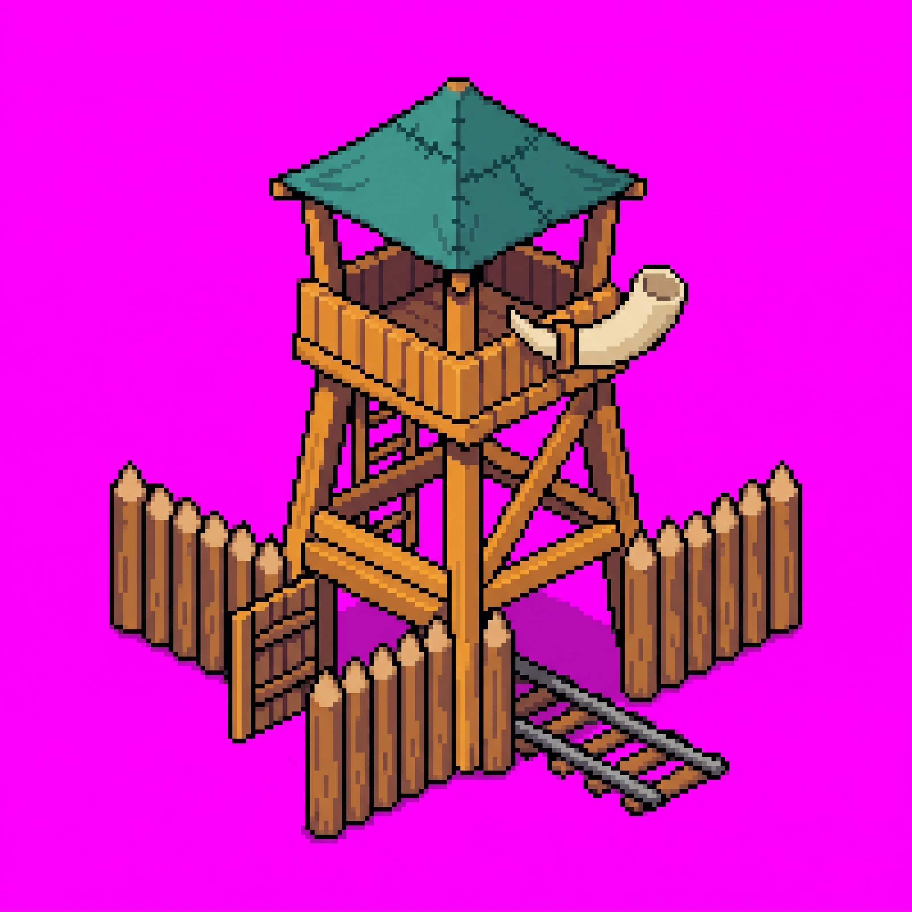
python tools/gen_sheets.py --pick b1-lookout 1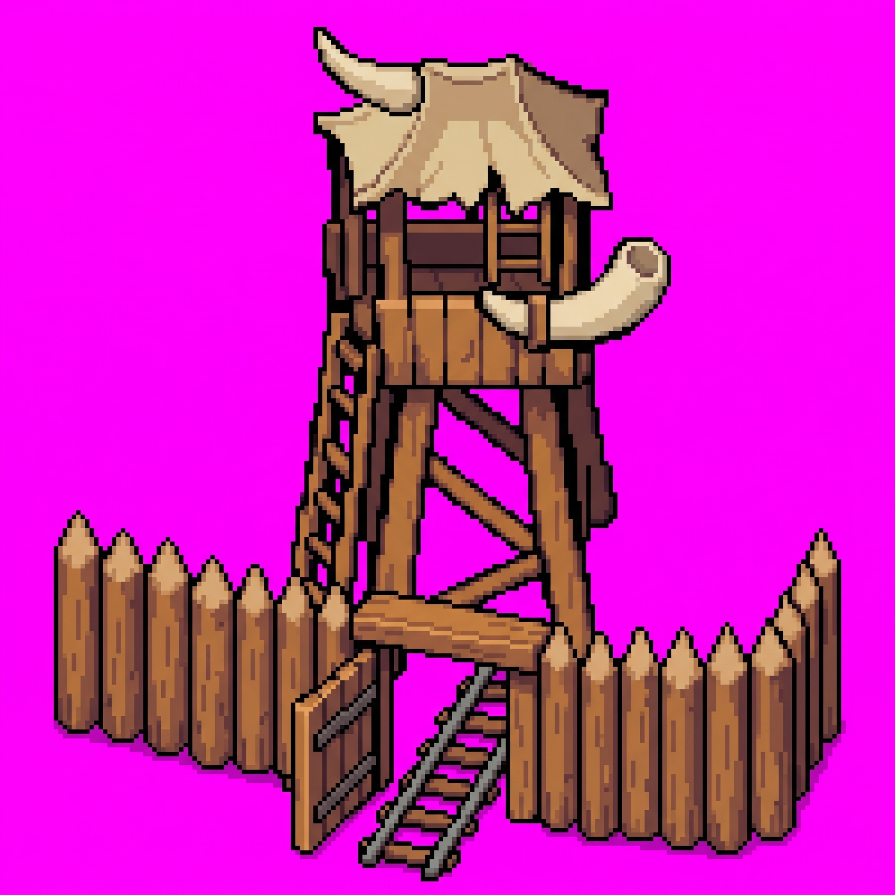
python tools/gen_sheets.py --pick b1-lookout 2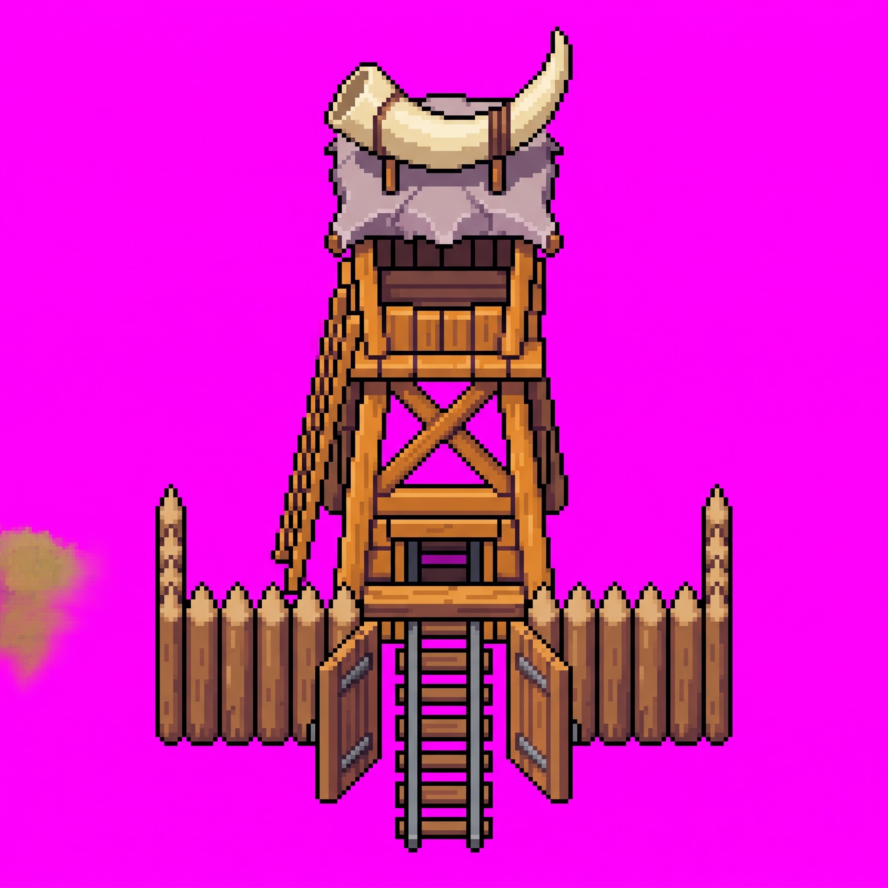
python tools/gen_sheets.py --pick b1-lookout 3No shadows. Pixel-art sprite sheet in exactly the style and palette of the attached image. Crisp hard pixels on a strict grid, no anti-aliasing, no blur, no gradients, each sprite with a dark 1-pixel outline, drawn at its final size with no finer detail than that size can hold. One three-quarter top-down projection, never isometric. Sprites in a neat grid with even spacing on a flat solid #FF00FF magenta background, nothing touching, no ground under them, no text unless asked. Bright yellow and bright red appear nowhere. External listeners: a wooden lookout tower with a hide roof, a bone horn on a stand and a little ladder, built INTO a low palisade of rounded logs (not sharpened): its legs stand in the wall, the wall runs out to the left and right of it for a short stretch, and at the tower's foot a wooden gate in the wall, open, where a mine-cart track passes through. About 128 px wide, 160 tall. One picture, alone on the magenta. Every building faces the viewer: its front wall parallel to the bottom edge of the image, the door in the middle of the front, seen slightly from above, exactly like the task board in the attached sheet b1-core. Never turned at an angle, never isometric. No ground under the building: no patch of grass, no base square, no plinth of earth. No frames, no boxes, no grid lines, no borders between sprites; each sprite floats alone on the magenta. No shadows, no smoke, no glow. Keep exactly the colours of the attached frame F1: the grass as saturated and bright as in it (about #7cbd40), the paths warm sand (about #e4b469); warm honey wood, light cool stone, teal and plum cloth, cream bone. No yellow, no orange and no red anywhere: those colours are reserved for the product's signals. Output the sheet as a PNG image. Attached, in order: f1-town, b1-core. F1 is the approved frame: its style and colours rule. References: f1-town.jpg, b1-core.jpg
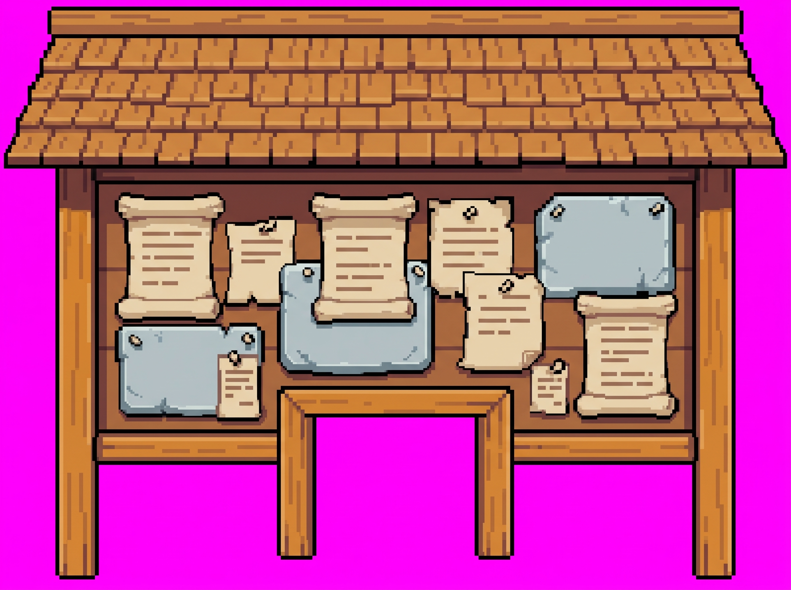
python tools/gen_sheets.py --pick b1-taskboard 1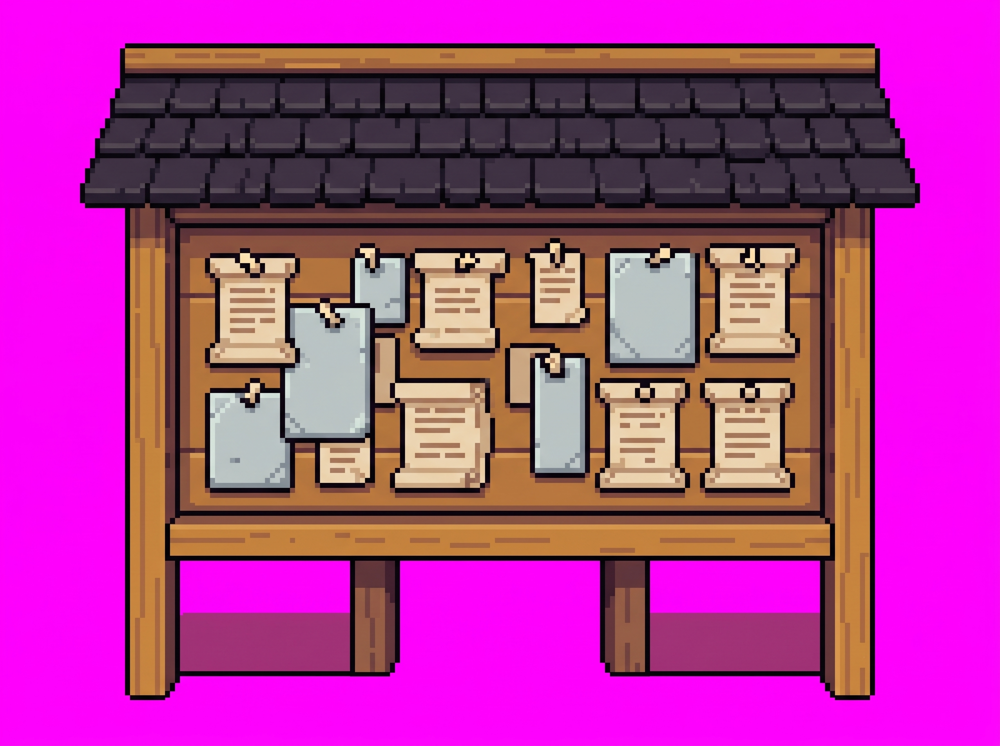
python tools/gen_sheets.py --pick b1-taskboard 2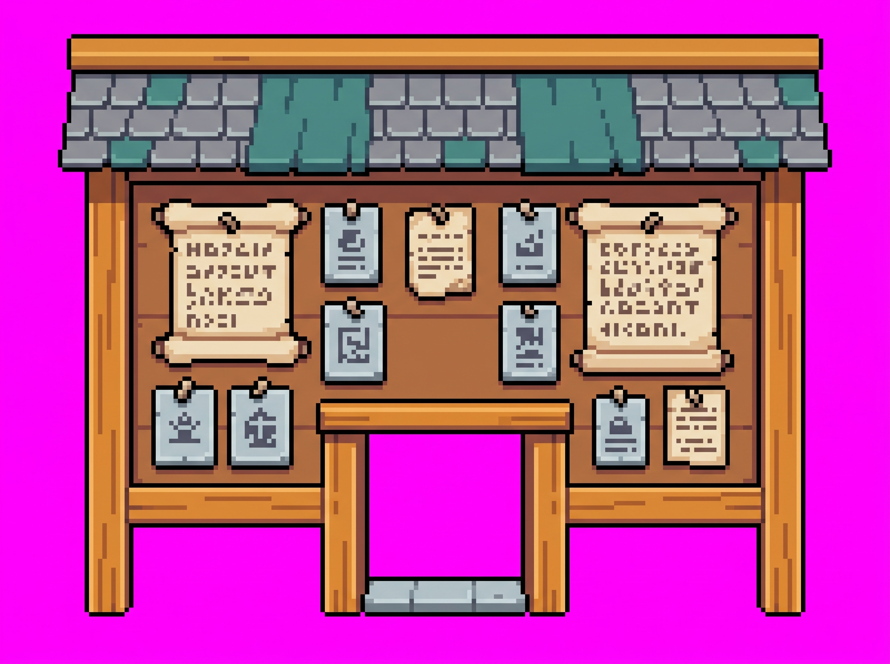
python tools/gen_sheets.py --pick b1-taskboard 3No shadows. Pixel-art sprite sheet in exactly the style and palette of the attached image. Crisp hard pixels on a strict grid, no anti-aliasing, no blur, no gradients, each sprite with a dark 1-pixel outline, drawn at its final size with no finer detail than that size can hold. One three-quarter top-down projection, never isometric. Sprites in a neat grid with even spacing on a flat solid #FF00FF magenta background, nothing touching, no ground under them, no text unless asked. Bright yellow and bright red appear nowhere. Task board: the task board as large as the work hall of the attached sheet, about 160–192 px wide: a broad notice board under a shingle roof on two posts, big parchment scrolls and light stone slabs pinned to it with bone pins, a door-sized gap below for its keeper. One picture, alone on the magenta. Every building faces the viewer: its front wall parallel to the bottom edge of the image, the door in the middle of the front, seen slightly from above, exactly like the task board in the attached sheet b1-core. Never turned at an angle, never isometric. No ground under the building: no patch of grass, no base square, no plinth of earth. No frames, no boxes, no grid lines, no borders between sprites; each sprite floats alone on the magenta. No shadows, no smoke, no glow. Keep exactly the colours of the attached frame F1: the grass as saturated and bright as in it (about #7cbd40), the paths warm sand (about #e4b469); warm honey wood, light cool stone, teal and plum cloth, cream bone. No yellow, no orange and no red anywhere: those colours are reserved for the product's signals. Output the sheet as a PNG image. Attached, in order: f1-town, b1-core. F1 is the approved frame: its style and colours rule. References: f1-town.jpg, b1-core.jpg
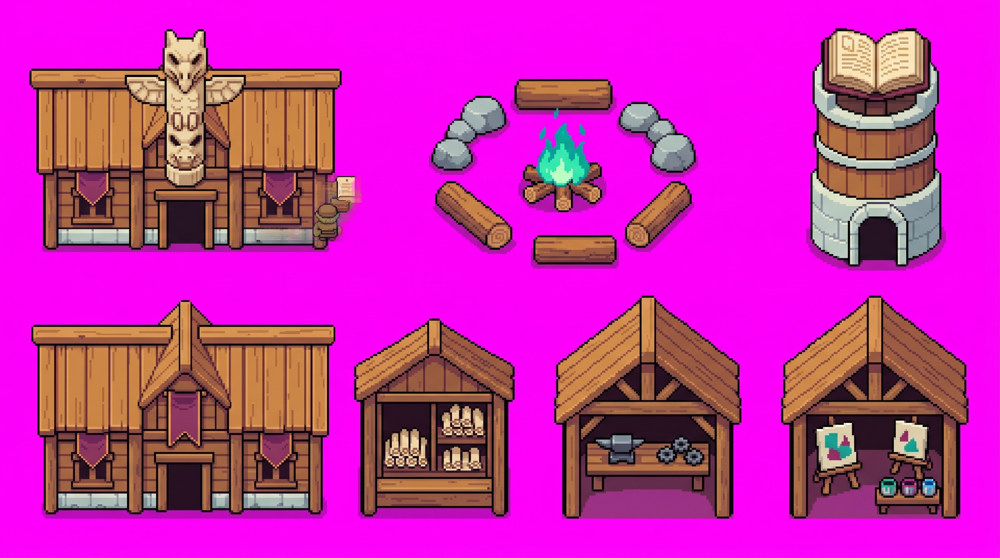
python tools/gen_sheets.py --pick b2-town 1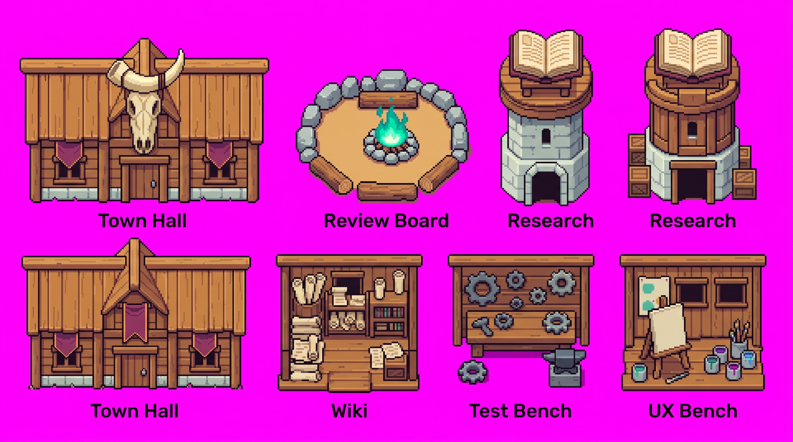
python tools/gen_sheets.py --pick b2-town 2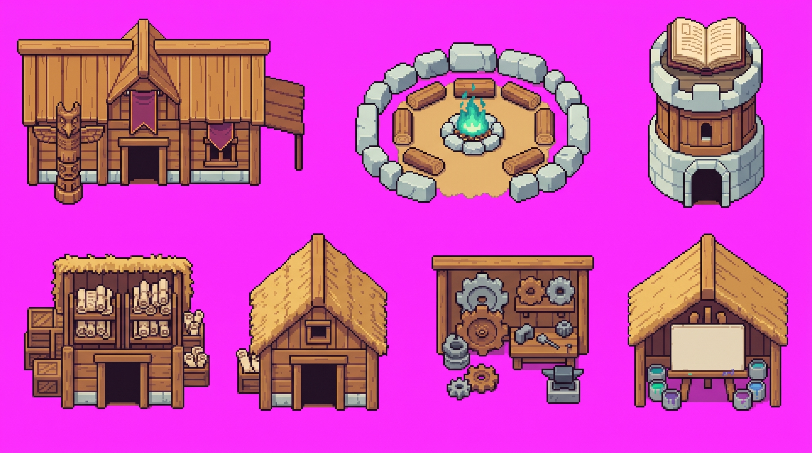
python tools/gen_sheets.py --pick b2-town 3No shadows. Pixel-art sprite sheet in exactly the style and palette of the attached image. Crisp hard pixels on a strict grid, no anti-aliasing, no blur, no gradients, each sprite with a dark 1-pixel outline, drawn at its final size with no finer detail than that size can hold. One three-quarter top-down projection, never isometric. Sprites in a neat grid with even spacing on a flat solid #FF00FF magenta background, nothing touching, no ground under them, no text unless asked. Bright yellow and bright red appear nowhere. Six buildings in one row, 96–128 px wide each, the door in the lower middle of each front: 1. Town Hall: a big long house with a carved totem and a plum banner, 128 × 128. 2. Review board: an open ring of stones round one calm campfire with teal flames, logs to sit on, 112 × 96. 3. Research: a round timber-and-stone tower with a big open book on a lectern at its top, no crenellations, 96 × 128. 4. Wiki: a hut stacked with scrolls and shelves, 96 × 96. 5. Test bench: a workshop with a small anvil and gears on a bench, 96 × 96. 6. UX bench: a painter's hut with an easel and colour pots in teal, plum and sky blue (no yellow or orange banner), 96 × 96. Every building faces the viewer: its front wall parallel to the bottom edge of the image, the door in the middle of the front, seen slightly from above, exactly like the task board in the attached sheet b1-core. Never turned at an angle, never isometric. No ground under the building: no patch of grass, no base square, no plinth of earth. No frames, no boxes, no grid lines, no borders between sprites; each sprite floats alone on the magenta. No shadows, no smoke, no glow. Keep exactly the colours of the attached frame F1: the grass as saturated and bright as in it (about #7cbd40), the paths warm sand (about #e4b469); warm honey wood, light cool stone, teal and plum cloth, cream bone. No yellow, no orange and no red anywhere: those colours are reserved for the product's signals. The wood a muted honey brown, never orange. Output the sheet as a PNG image. Attached, in order: f1-town, b1-core. F1 is the approved frame: its style and colours rule. References: f1-town.jpg, b1-core.jpg
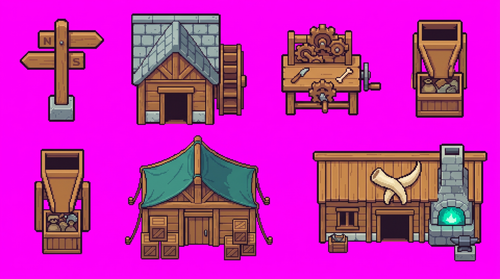
python tools/gen_sheets.py --pick b3-plumbing 1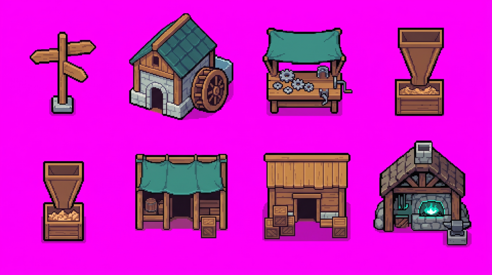
python tools/gen_sheets.py --pick b3-plumbing 2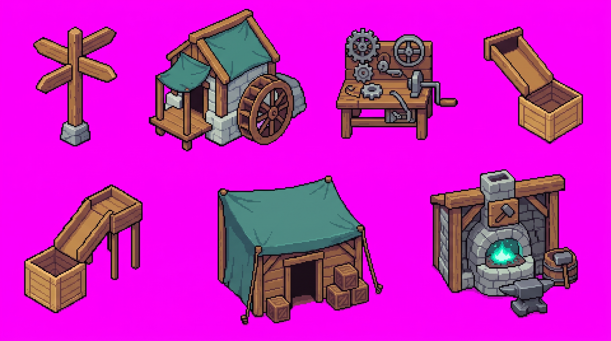
python tools/gen_sheets.py --pick b3-plumbing 3No shadows. Pixel-art sprite sheet in exactly the style and palette of the attached image. Crisp hard pixels on a strict grid, no anti-aliasing, no blur, no gradients, each sprite with a dark 1-pixel outline, drawn at its final size with no finer detail than that size can hold. One three-quarter top-down projection, never isometric. Sprites in a neat grid with even spacing on a flat solid #FF00FF magenta background, nothing touching, no ground under them, no text unless asked. Bright yellow and bright red appear nowhere. Six small buildings in one row, 64–96 px wide each: 1. Router: a wooden signpost with three arms on a small plinth, 64 × 80. 2. Transformer: a small water mill with a turning wheel, 96 × 96. 3. Script: a tinker's workbench with cogs and a crank, 80 × 80. 4. Drop file here: a wooden chute into an open crate, 64 × 64. 5. output: a covered storehouse with crates at the door, 96 × 80. 6. Branches & PRs: a smithy with a forge glowing teal, not red, 96 × 96. Exactly six, no extra piece. Every building faces the viewer: its front wall parallel to the bottom edge of the image, the door in the middle of the front, seen slightly from above, exactly like the task board in the attached sheet b1-core. Never turned at an angle, never isometric. No ground under the building: no patch of grass, no base square, no plinth of earth. No frames, no boxes, no grid lines, no borders between sprites; each sprite floats alone on the magenta. No shadows, no smoke, no glow. Keep exactly the colours of the attached frame F1: the grass as saturated and bright as in it (about #7cbd40), the paths warm sand (about #e4b469); warm honey wood, light cool stone, teal and plum cloth, cream bone. No yellow, no orange and no red anywhere: those colours are reserved for the product's signals. The wood a muted honey brown, never orange. Output the sheet as a PNG image. Attached, in order: f1-town, b1-core. F1 is the approved frame: its style and colours rule. References: f1-town.jpg, b1-core.jpg
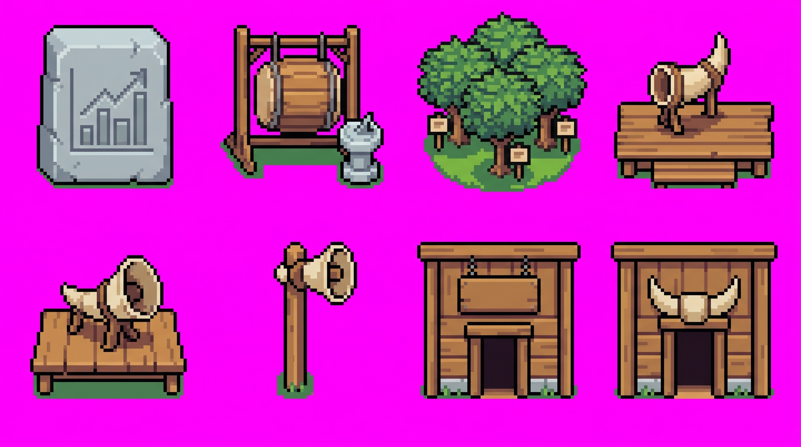
python tools/gen_sheets.py --pick b4-others 1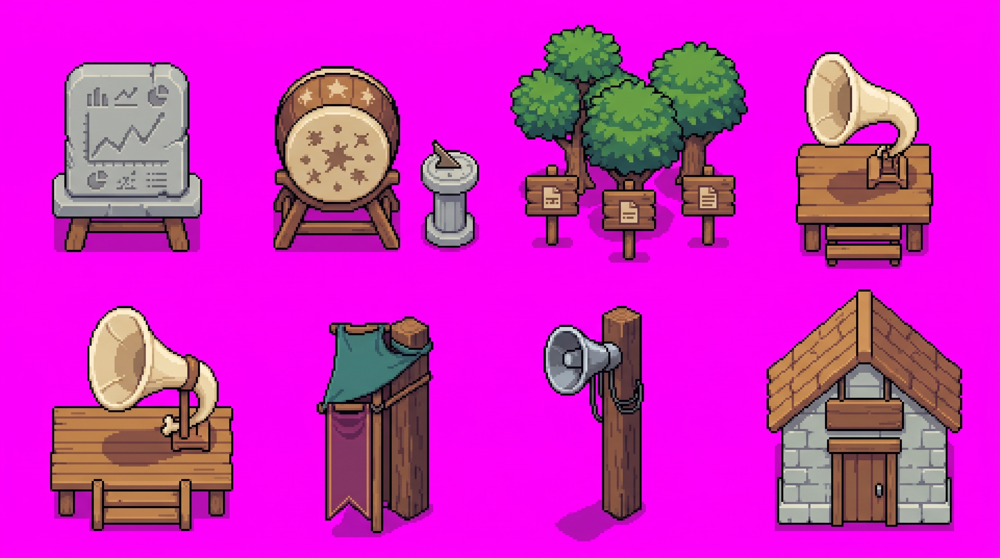
python tools/gen_sheets.py --pick b4-others 2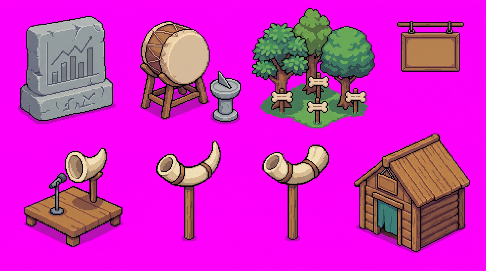
python tools/gen_sheets.py --pick b4-others 3No shadows. Pixel-art sprite sheet in exactly the style and palette of the attached image. Crisp hard pixels on a strict grid, no anti-aliasing, no blur, no gradients, each sprite with a dark 1-pixel outline, drawn at its final size with no finer detail than that size can hold. One three-quarter top-down projection, never isometric. Sprites in a neat grid with even spacing on a flat solid #FF00FF magenta background, nothing touching, no ground under them, no text unless asked. Bright yellow and bright red appear nowhere. Six small buildings in one row, 64–96 px wide each: 1. Metrics: a carved stone with a chart scratched on it, 64 × 80. 2. Calendar: a big drum on a frame with a sundial beside it, 80 × 80. 3. File tree: a small grove of three trees with labelled stakes, 96 × 96. 4. Audio briefing: a small stage with a horn speaker made of bone, 80 × 80. 5. Sound alerts: a horn on a post, 64 × 80. 6. A building of one's own: a plain empty hut with a blank sign, 80 × 80. Not a workbench: none of these is the Script bench. Every building faces the viewer: its front wall parallel to the bottom edge of the image, the door in the middle of the front, seen slightly from above, exactly like the task board in the attached sheet b1-core. Never turned at an angle, never isometric. No ground under the building: no patch of grass, no base square, no plinth of earth. No frames, no boxes, no grid lines, no borders between sprites; each sprite floats alone on the magenta. No shadows, no smoke, no glow. Keep exactly the colours of the attached frame F1: the grass as saturated and bright as in it (about #7cbd40), the paths warm sand (about #e4b469); warm honey wood, light cool stone, teal and plum cloth, cream bone. No yellow, no orange and no red anywhere: those colours are reserved for the product's signals. The wood a muted honey brown, never orange. Output the sheet as a PNG image. Attached, in order: f1-town, b1-core. F1 is the approved frame: its style and colours rule. References: f1-town.jpg, b1-core.jpg
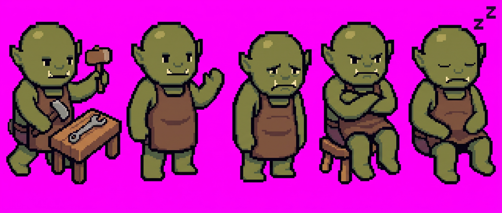
python tools/gen_sheets.py --pick o3-states 1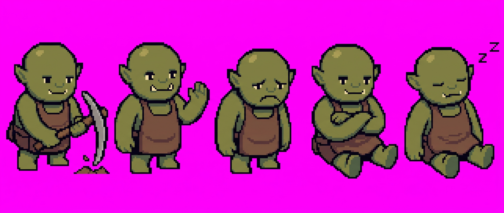
python tools/gen_sheets.py --pick o3-states 2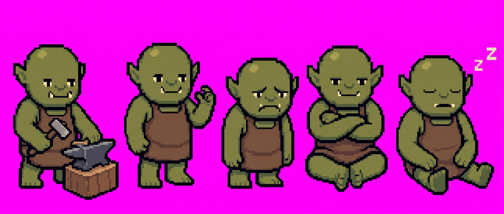
python tools/gen_sheets.py --pick o3-states 3No shadows. Pixel-art sprite sheet in exactly the style and palette of the attached image. Crisp hard pixels on a strict grid, no anti-aliasing, no blur, no gradients, each sprite with a dark 1-pixel outline, drawn at its final size with no finer detail than that size can hold. One three-quarter top-down projection, never isometric. Sprites in a neat grid with even spacing on a flat solid #FF00FF magenta background, nothing touching, no ground under them, no text unless asked. Bright yellow and bright red appear nowhere. The worker orc, 32 × 32, five poses in one row: working with a calm face; waiting with one hand raised and a curious face; slumped with a frown (no smoke puff); sitting with arms crossed; dozing with a small "z z". The same orc as the attached sheets o1 and o2: bald, round, big head, short body, olive-moss skin, small tusks, a leather apron, the same pixel size and proportions (32 × 32), the same outline. Not a taller orc, no cap, no shirt and trousers. Legs and arms clearly swing in every walk; the same facing in every frame of a row. No frames, no boxes, no grid lines, no borders between sprites; each sprite floats alone on the magenta. No shadows, no smoke, no glow. Keep exactly the colours of the attached frame F1: the grass as saturated and bright as in it (about #7cbd40), the paths warm sand (about #e4b469); warm honey wood, light cool stone, teal and plum cloth, cream bone. No yellow, no orange and no red anywhere: those colours are reserved for the product's signals. The wood a muted honey brown, never orange. Output the sheet as a PNG image. Attached, in order: f1-town, o1-body, o2-roles. F1 is the approved frame: its style and colours rule. References: f1-town.jpg, o1-body.jpg, o2-roles.jpg
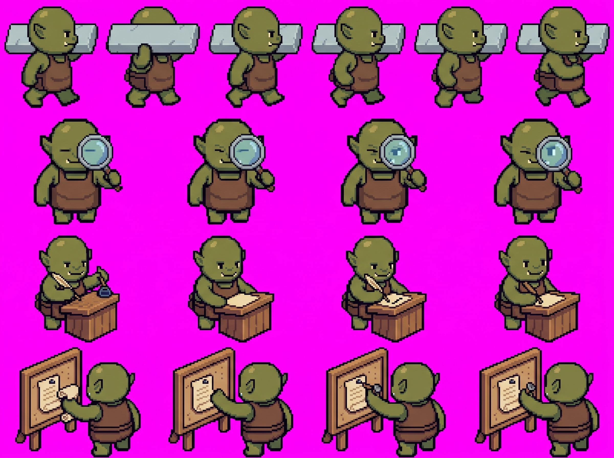
python tools/gen_sheets.py --pick o5-inside 1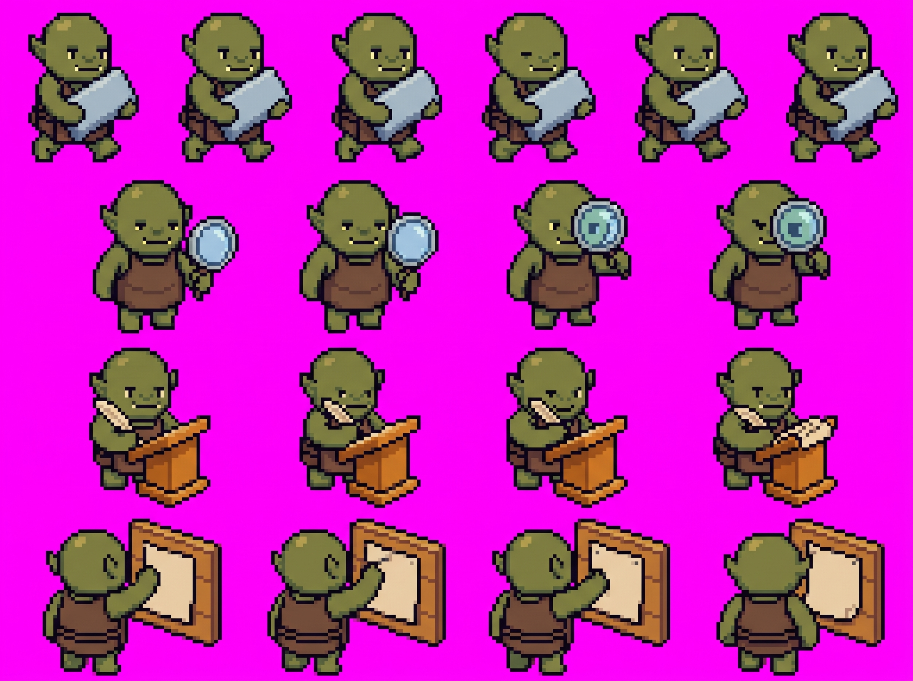
python tools/gen_sheets.py --pick o5-inside 2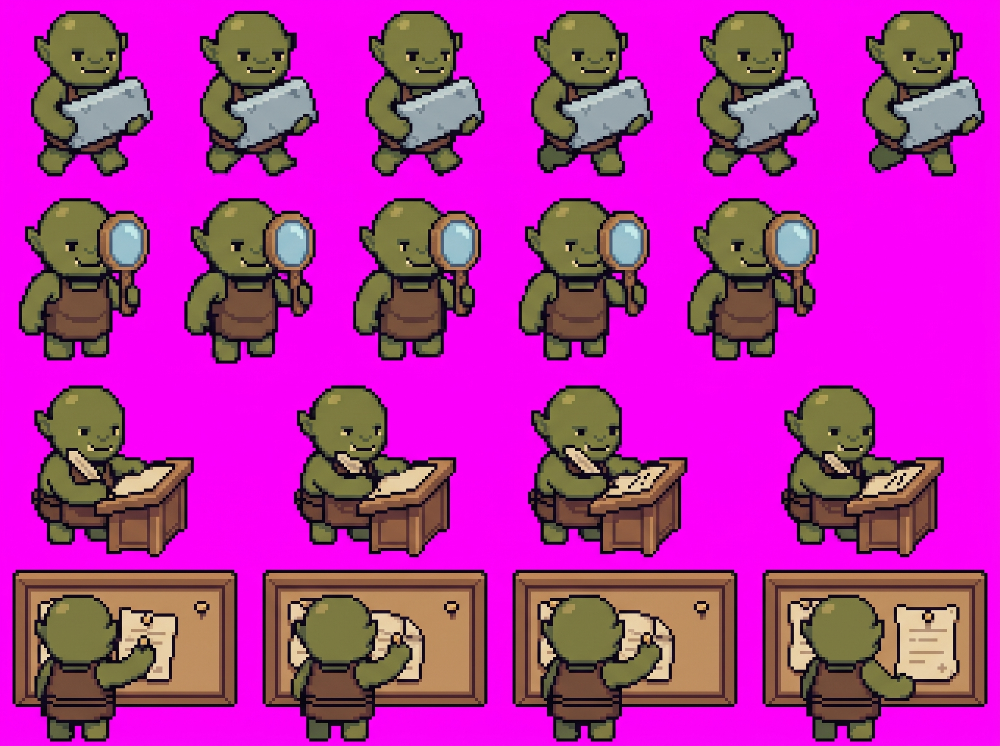
python tools/gen_sheets.py --pick o5-inside 3No shadows. Pixel-art sprite sheet in exactly the style and palette of the attached image. Crisp hard pixels on a strict grid, no anti-aliasing, no blur, no gradients, each sprite with a dark 1-pixel outline, drawn at its final size with no finer detail than that size can hold. One three-quarter top-down projection, never isometric. Sprites in a neat grid with even spacing on a flat solid #FF00FF magenta background, nothing touching, no ground under them, no text unless asked. Bright yellow and bright red appear nowhere. The worker orc, 32 × 32, four rows: row 1, carrying a light stone slab, 6 frames walking right; row 2, holding a big magnifying glass up, 4 frames; row 3, writing with a quill at a lectern, 4 frames; row 4, pinning a parchment to a board, 4 frames, every frame a step of the action. The lens of the glass pale blue, not magenta. The same orc as the attached sheets o1 and o2: bald, round, big head, short body, olive-moss skin, small tusks, a leather apron, the same pixel size and proportions (32 × 32), the same outline. Not a taller orc, no cap, no shirt and trousers. Legs and arms clearly swing in every walk; the same facing in every frame of a row. No frames, no boxes, no grid lines, no borders between sprites; each sprite floats alone on the magenta. No shadows, no smoke, no glow. Keep exactly the colours of the attached frame F1: the grass as saturated and bright as in it (about #7cbd40), the paths warm sand (about #e4b469); warm honey wood, light cool stone, teal and plum cloth, cream bone. No yellow, no orange and no red anywhere: those colours are reserved for the product's signals. The wood a muted honey brown, never orange. Output the sheet as a PNG image. Attached, in order: f1-town, o1-body, o2-roles. F1 is the approved frame: its style and colours rule. References: f1-town.jpg, o1-body.jpg, o2-roles.jpg
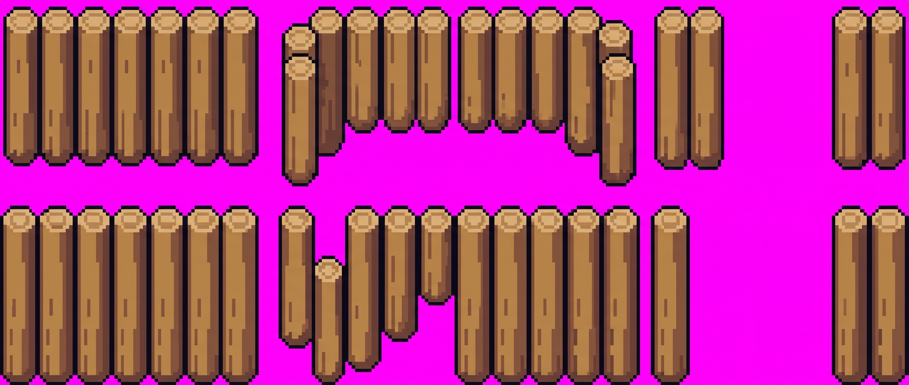
python tools/gen_sheets.py --pick g3-palisade 1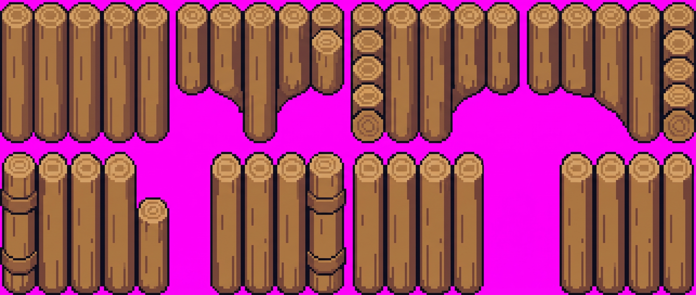
python tools/gen_sheets.py --pick g3-palisade 2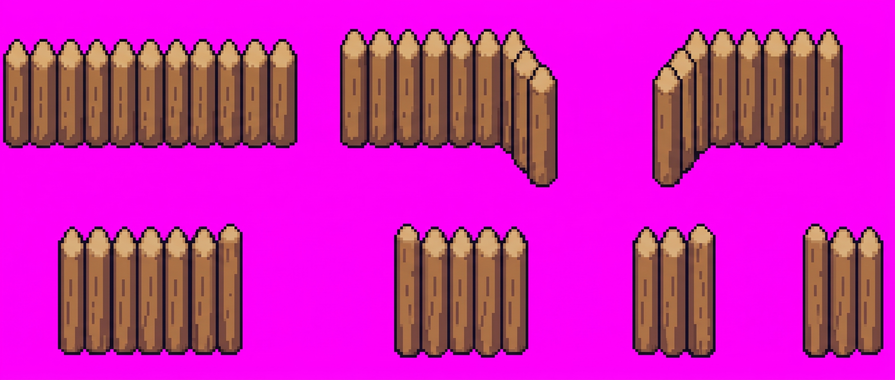
python tools/gen_sheets.py --pick g3-palisade 3No shadows. Pixel-art sprite sheet in exactly the style and palette of the attached image. Crisp hard pixels on a strict grid, no anti-aliasing, no blur, no gradients, each sprite with a dark 1-pixel outline, drawn at its final size with no finer detail than that size can hold. One three-quarter top-down projection, never isometric. Sprites in a neat grid with even spacing on a flat solid #FF00FF magenta background, nothing touching, no ground under them, no text unless asked. Bright yellow and bright red appear nowhere. A low wooden palisade of rounded logs (not sharpened), 32-px pieces, six in one row: a straight run; a corner turning down on the left; a corner turning down on the right; an end post on the left; an end post on the right; a gap where a track passes. No track drawn, no rail fence: only the palisade of rounded logs, the same logs as the attached decor sheet. No frames, no boxes, no grid lines, no borders between sprites; each sprite floats alone on the magenta. No shadows, no smoke, no glow. Keep exactly the colours of the attached frame F1: the grass as saturated and bright as in it (about #7cbd40), the paths warm sand (about #e4b469); warm honey wood, light cool stone, teal and plum cloth, cream bone. No yellow, no orange and no red anywhere: those colours are reserved for the product's signals. The wood a muted honey brown, never orange. Output the sheet as a PNG image. Attached, in order: f1-town, g2-decor. F1 is the approved frame: its style and colours rule. References: f1-town.jpg, g2-decor.jpg
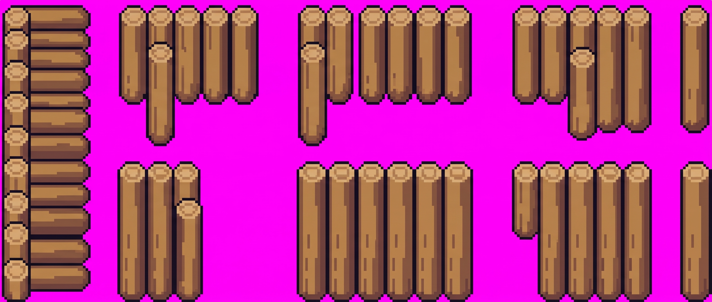
python tools/gen_sheets.py --pick g3-sides 1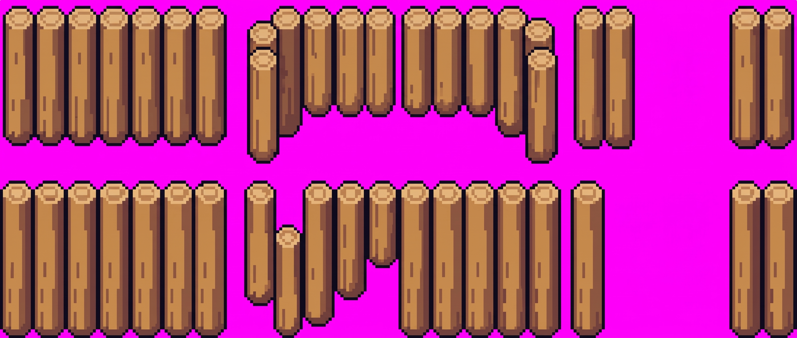
python tools/gen_sheets.py --pick g3-sides 2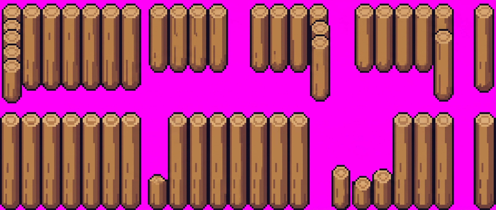
python tools/gen_sheets.py --pick g3-sides 3No shadows. Pixel-art sprite sheet in exactly the style and palette of the attached image. Crisp hard pixels on a strict grid, no anti-aliasing, no blur, no gradients, each sprite with a dark 1-pixel outline, drawn at its final size with no finer detail than that size can hold. One three-quarter top-down projection, never isometric. Sprites in a neat grid with even spacing on a flat solid #FF00FF magenta background, nothing touching, no ground under them, no text unless asked. Bright yellow and bright red appear nowhere. The same low palisade of rounded logs as the attached sheet g3-palisade, the same log size and the same pixel size, six pieces in one row: a vertical run (the wall going down the right edge of the camp, seen front-on: a column of log tops one behind the other); the four outer corners (north-west, north-east, south-west, south-east), each where a horizontal run meets a vertical one; an end post. No track, no gate. No frames, no boxes, no grid lines, no borders between sprites; each sprite floats alone on the magenta. No shadows, no smoke, no glow. Keep exactly the colours of the attached frame F1: the grass as saturated and bright as in it (about #7cbd40), the paths warm sand (about #e4b469); warm honey wood, light cool stone, teal and plum cloth, cream bone. No yellow, no orange and no red anywhere: those colours are reserved for the product's signals. The wood a muted honey brown, never orange. Output the sheet as a PNG image. Attached, in order: f1-town, g3-palisade. F1 is the approved frame: its style and colours rule. References: f1-town.jpg, g3-palisade.jpg
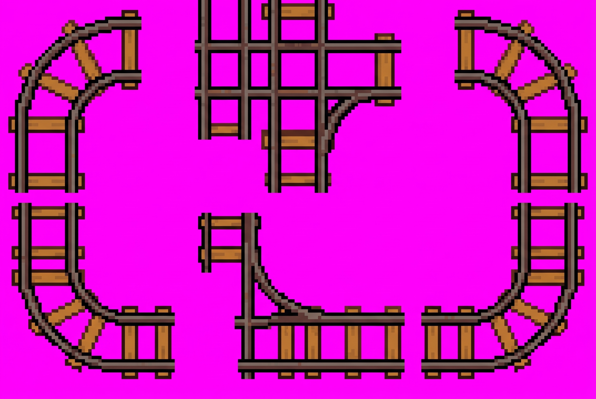
python tools/gen_sheets.py --pick c2-more 1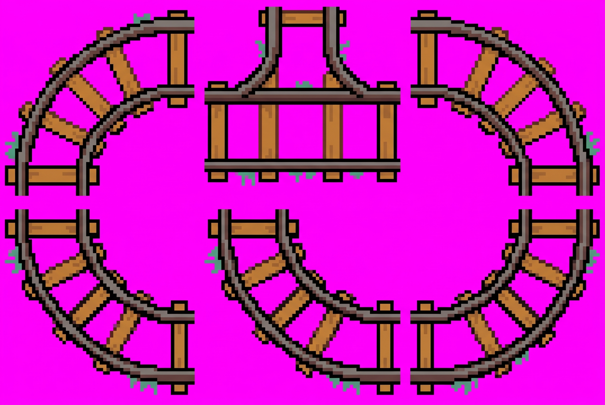
python tools/gen_sheets.py --pick c2-more 2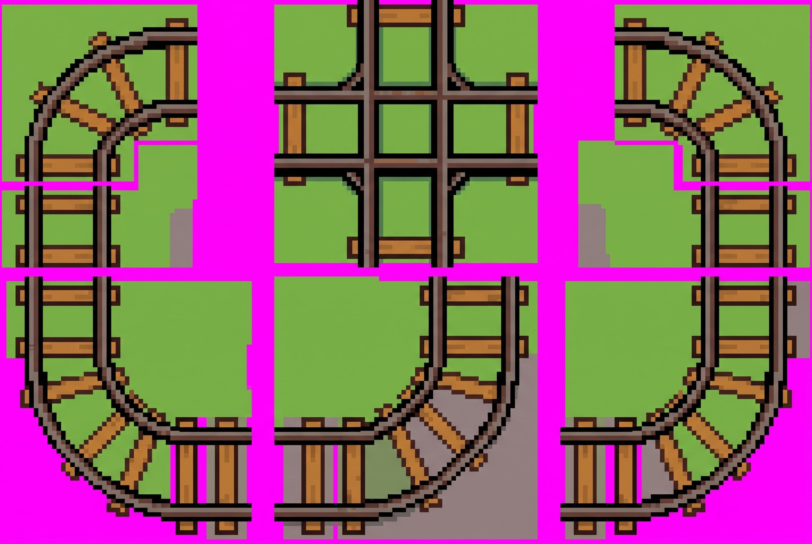
python tools/gen_sheets.py --pick c2-more 3No shadows. Pixel-art sprite sheet in exactly the style and palette of the attached image. Crisp hard pixels on a strict grid, no anti-aliasing, no blur, no gradients, each sprite with a dark 1-pixel outline, drawn at its final size with no finer detail than that size can hold. One three-quarter top-down projection, never isometric. Sprites in a neat grid with even spacing on a flat solid #FF00FF magenta background, nothing touching, no ground under them, no text unless asked. Bright yellow and bright red appear nowhere. Track tiles that match the attached track sheet c2 exactly: the same rail gauge and the same tie spacing as its straight pieces. The last curves came with the rails 41 px apart where c2's are 32: keep the rails exactly as far apart as on the attached straights. Six pieces in a row with magenta round each: a curve joining the top and the left sides (north–west); a T-junction with exits north, east and south; then the four curves again: north–east, east–south, south–west, west–north. Every tile the same square size as c2's, the rails crossing each edge at its middle. Flat from above, exactly like the attached track sheet c2: dark iron rails on honey-wood ties, the ties evenly spaced. No frames, no boxes, no grid lines, no borders between sprites; each sprite floats alone on the magenta. No shadows, no smoke, no glow. Keep exactly the colours of the attached frame F1: the grass as saturated and bright as in it (about #7cbd40), the paths warm sand (about #e4b469); warm honey wood, light cool stone, teal and plum cloth, cream bone. No yellow, no orange and no red anywhere: those colours are reserved for the product's signals. The wood a muted honey brown, never orange. Output the sheet as a PNG image. Attached, in order: f1-town, c2-track. F1 is the approved frame: its style and colours rule. References: f1-town.jpg, c2-track.jpg
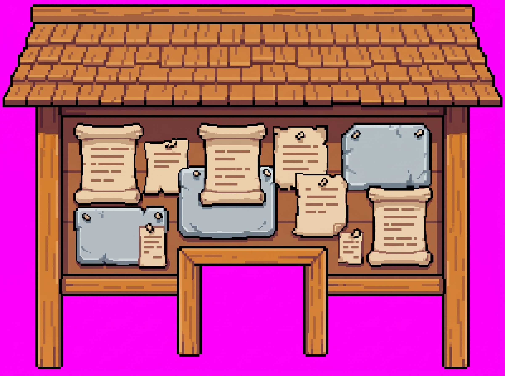
python tools/gen_sheets.py --pick b1-taskboard-s 1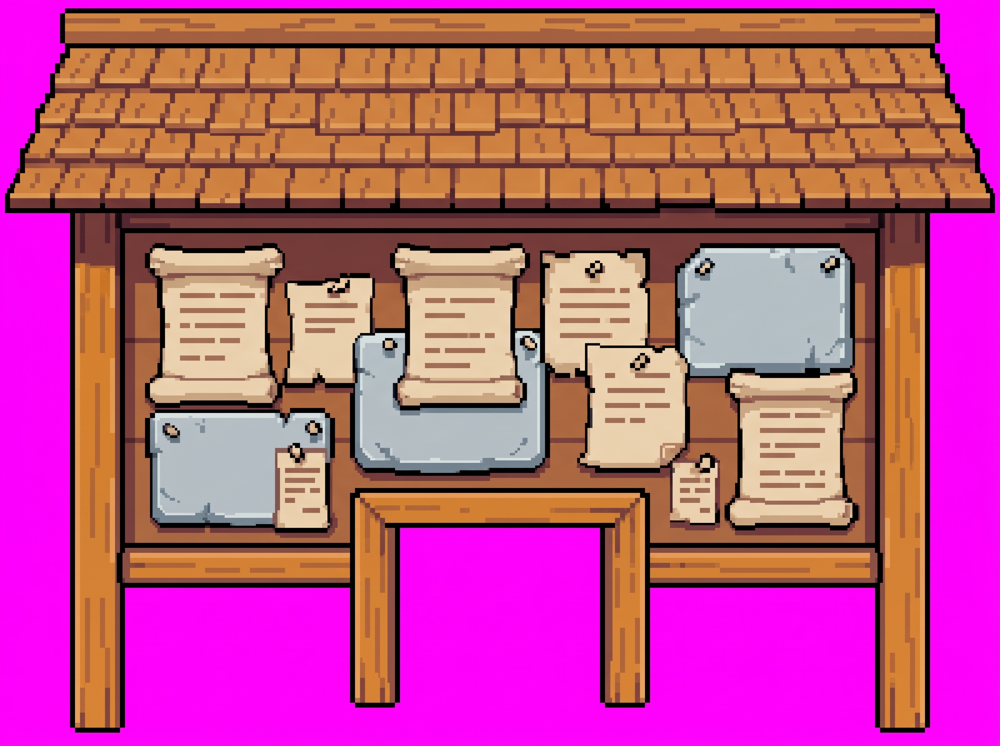
python tools/gen_sheets.py --pick b1-taskboard-s 2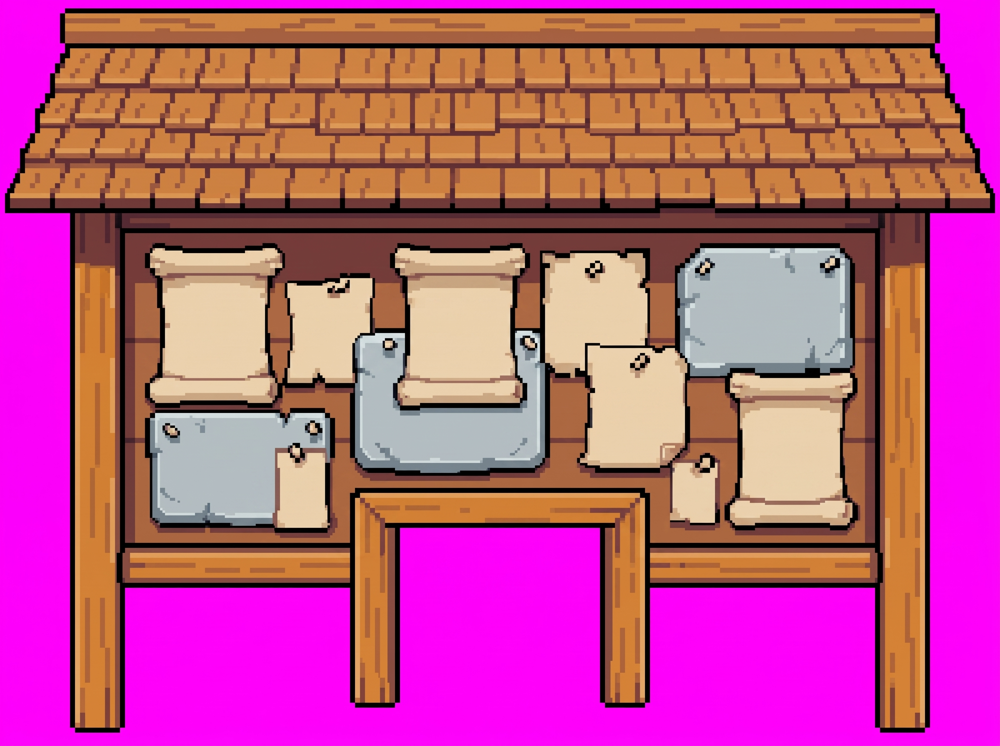
python tools/gen_sheets.py --pick b1-taskboard-s 3No shadows. Pixel-art sprite sheet in exactly the style and palette of the attached image. Crisp hard pixels on a strict grid, no anti-aliasing, no blur, no gradients, each sprite with a dark 1-pixel outline, drawn at its final size with no finer detail than that size can hold. One three-quarter top-down projection, never isometric. Sprites in a neat grid with even spacing on a flat solid #FF00FF magenta background, nothing touching, no ground under them, no text unless asked. Bright yellow and bright red appear nowhere. Task board: the attached task board b1-taskboard, the same design (shingle roof on posts, scrolls and stone slabs pinned with bone pins, the door-sized gap below), redrawn smaller: about 0.8 of the width of the work hall with the teal roof in the attached sheet b1-core, at exactly the same pixel size as that work hall. The wood a muted honey brown, as in b1-core. One picture, alone on the magenta. Every building faces the viewer: its front wall parallel to the bottom edge of the image, the door in the middle of the front, seen slightly from above, exactly like the task board in the attached sheet b1-core. Never turned at an angle, never isometric. No ground under the building: no patch of grass, no base square, no plinth of earth. Draw it small, at the pixel size of the attached sheet b1-core: the building takes about a third of the image's width, with wide magenta all round; never filling the frame. No frames, no boxes, no grid lines, no borders between sprites; each sprite floats alone on the magenta. No shadows, no smoke, no glow. Keep exactly the colours of the attached frame F1: the grass as saturated and bright as in it (about #7cbd40), the paths warm sand (about #e4b469); warm honey wood, light cool stone, teal and plum cloth, cream bone. No yellow, no orange and no red anywhere: those colours are reserved for the product's signals. The wood a muted honey brown, never orange. Output the sheet as a PNG image. Attached, in order: f1-town, b1-core, b1-taskboard. F1 is the approved frame: its style and colours rule. References: f1-town.jpg, b1-core.jpg, b1-taskboard.jpg
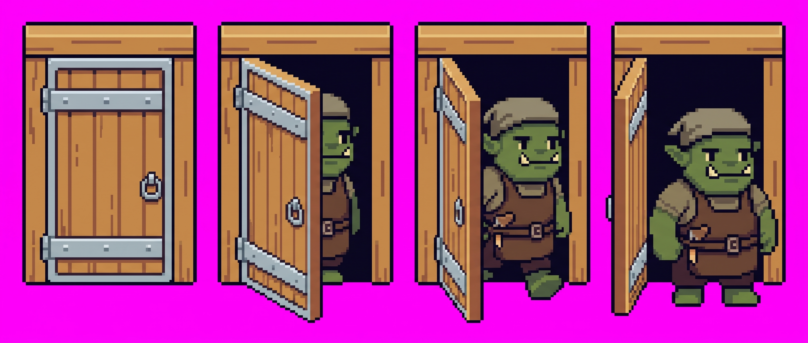
python tools/gen_sheets.py --pick o6-door 1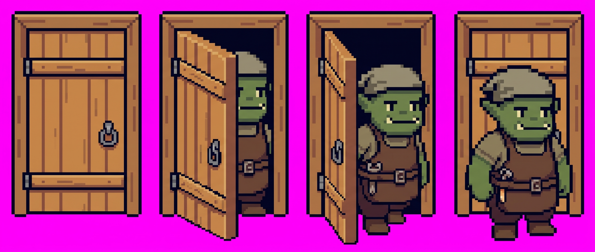
python tools/gen_sheets.py --pick o6-door 2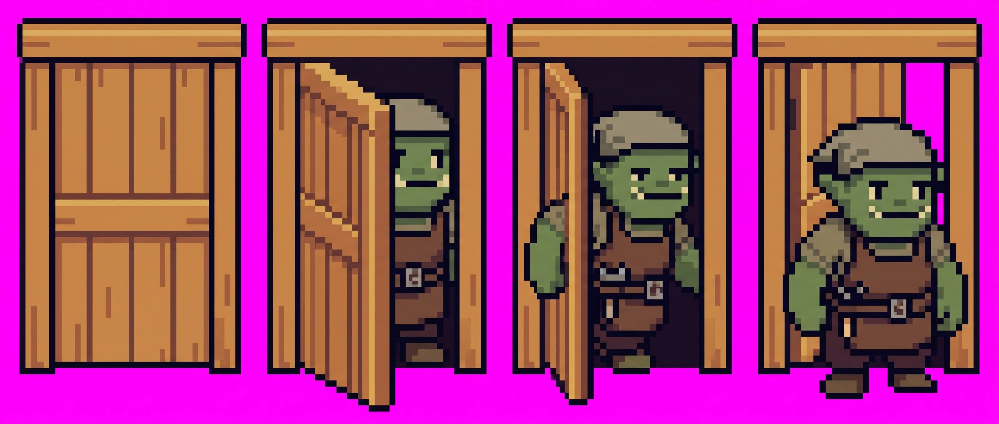
python tools/gen_sheets.py --pick o6-door 3No shadows. Pixel-art sprite sheet in exactly the style and palette of the attached image. Crisp hard pixels on a strict grid, no anti-aliasing, no blur, no gradients, each sprite with a dark 1-pixel outline, drawn at its final size with no finer detail than that size can hold. One three-quarter top-down projection, never isometric. Sprites in a neat grid with even spacing on a flat solid #FF00FF magenta background, nothing touching, no ground under them, no text unless asked. Bright yellow and bright red appear nowhere. The worker orc, 32 × 32, stepping out of a wooden door, four frames in one row, the same door in each: the door closed with the orc behind it (only the door seen); the door opening, the orc's face in the gap; the orc half out of the doorway; the orc out in front of the door, facing the viewer. The same orc as the attached sheets roles-2 and o3-states-r1: a cloth cap, a leather apron over a shirt, a tool belt, olive-moss skin, small tusks; the same pixel size and proportions as in them, the same outline. The same facing in every frame; each frame a clear step of the movement. No frames, no boxes, no grid lines, no borders between sprites; each sprite floats alone on the magenta. No shadows, no smoke, no glow. Keep exactly the colours of the attached frame F1: the grass as saturated and bright as in it (about #7cbd40), the paths warm sand (about #e4b469); warm honey wood, light cool stone, teal and plum cloth, cream bone. No yellow, no orange and no red anywhere: those colours are reserved for the product's signals. The wood a muted honey brown, never orange. Output the sheet as a PNG image. Attached, in order: f1-town, roles-2, o3-states-r1. F1 is the approved frame: its style and colours rule. References: f1-town.jpg, ../0.3/roles-2.jpg, o3-states-r1.jpg
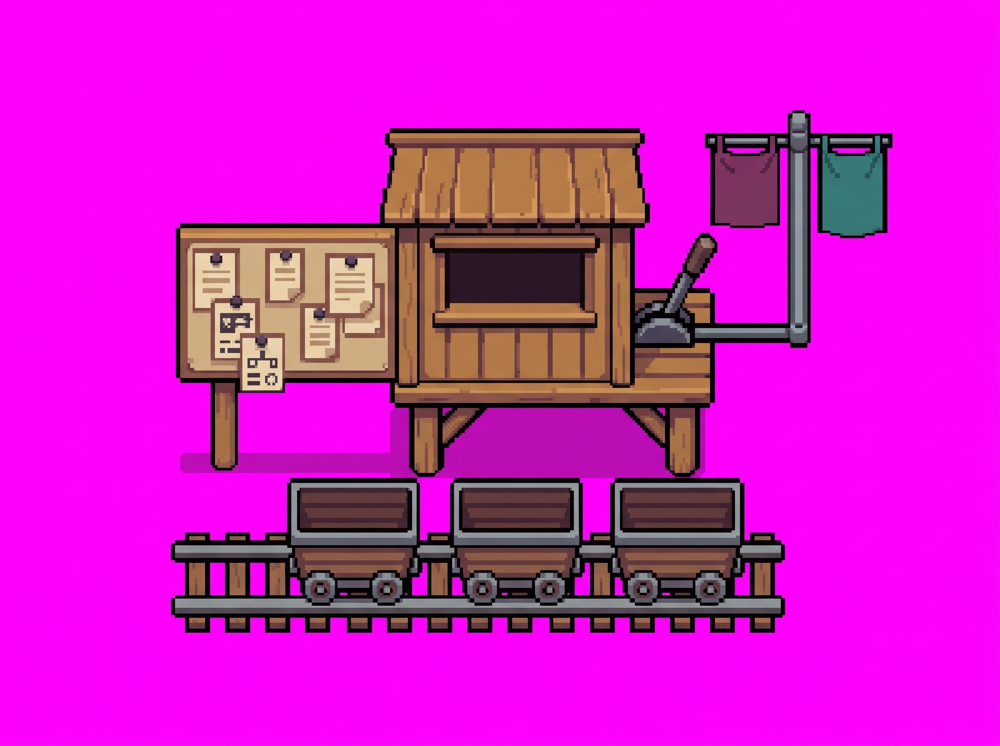
python tools/gen_sheets.py --pick st-dispatch 1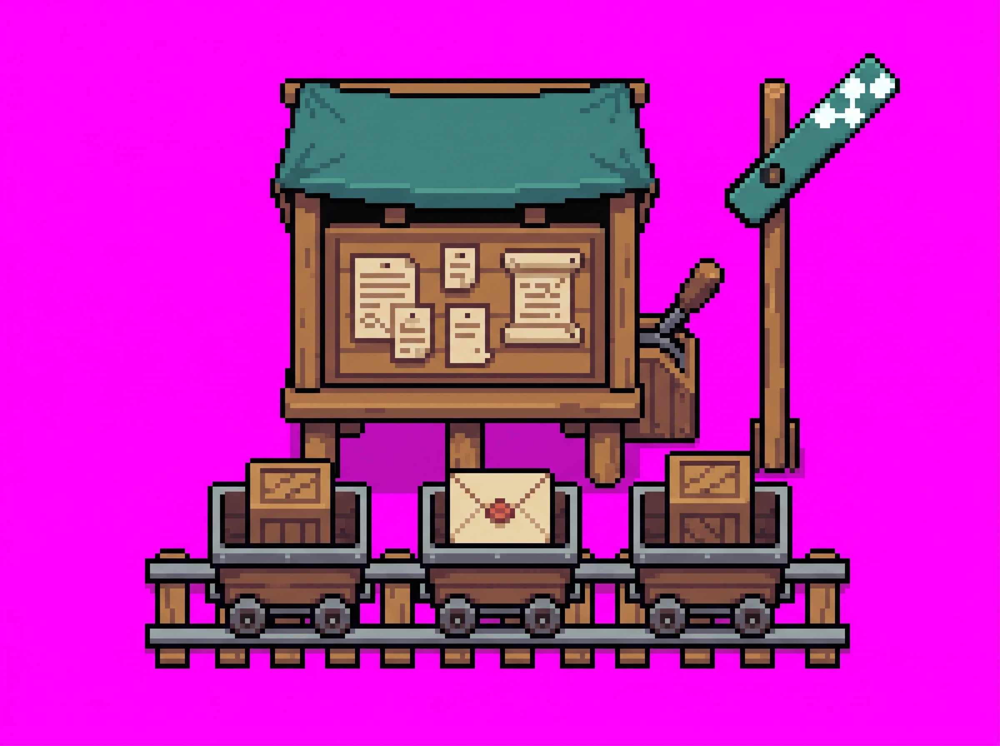
python tools/gen_sheets.py --pick st-dispatch 2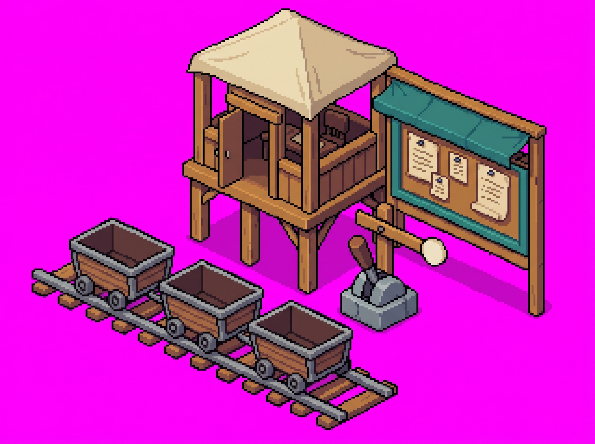
python tools/gen_sheets.py --pick st-dispatch 3No shadows. Pixel-art sprite sheet in exactly the style and palette of the attached image. Crisp hard pixels on a strict grid, no anti-aliasing, no blur, no gradients, each sprite with a dark 1-pixel outline, drawn at its final size with no finer detail than that size can hold. One three-quarter top-down projection, never isometric. Sprites in a neat grid with even spacing on a flat solid #FF00FF magenta background, nothing touching, no ground under them, no text unless asked. Bright yellow and bright red appear nowhere. Task board as a station: a dispatcher's booth on wooden stilts at the start of a mine-cart line, a large board of pinned work-order sheets on its side, a big lever and a semaphore arm; in front of it a short siding of track with three mine carts waiting in a row. About the width of the work hall with the teal roof in the attached sheet b1-core. One picture, alone on the magenta. Every building faces the viewer: its front wall parallel to the bottom edge of the image, the door in the middle of the front, seen slightly from above, exactly like the task board in the attached sheet b1-core. Never turned at an angle, never isometric. No ground under the building: no patch of grass, no base square, no plinth of earth. Draw it small, at the pixel size of the attached sheet b1-core: the building takes about a third of the image's width, with wide magenta all round; never filling the frame. No frames, no boxes, no grid lines, no borders between sprites; each sprite floats alone on the magenta. No shadows, no smoke, no glow. Keep exactly the colours of the attached frame F1: the grass as saturated and bright as in it (about #7cbd40), the paths warm sand (about #e4b469); warm honey wood, light cool stone, teal and plum cloth, cream bone. No yellow, no orange and no red anywhere: those colours are reserved for the product's signals. The wood a muted honey brown, never orange. Output the sheet as a PNG image. Attached, in order: f1-town, b1-core, roles-2. F1 is the approved frame: its style and colours rule. References: f1-town.jpg, b1-core.jpg, ../0.3/roles-2.jpg
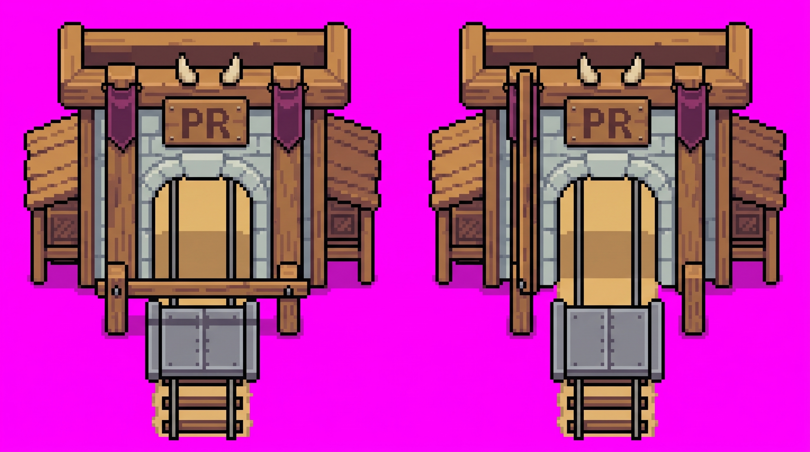
python tools/gen_sheets.py --pick st-gate 1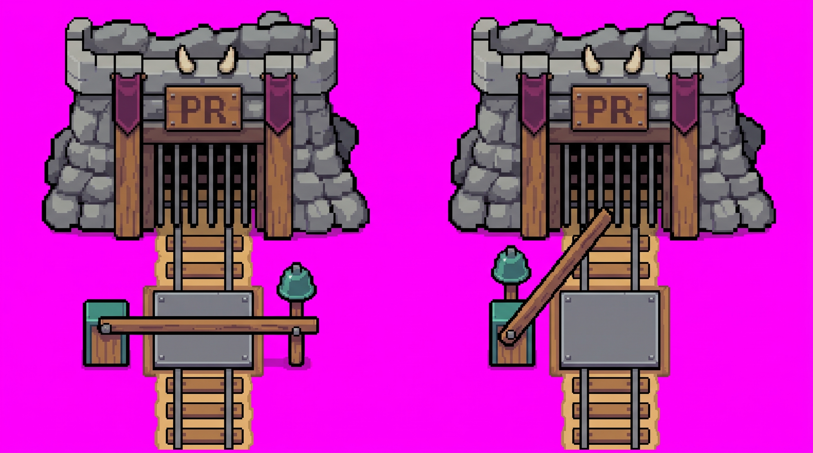
python tools/gen_sheets.py --pick st-gate 2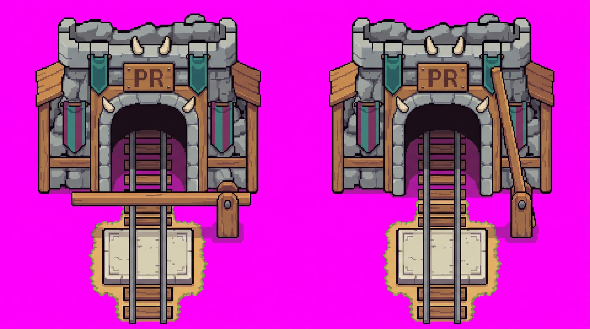
python tools/gen_sheets.py --pick st-gate 3No shadows. Pixel-art sprite sheet in exactly the style and palette of the attached image. Crisp hard pixels on a strict grid, no anti-aliasing, no blur, no gradients, each sprite with a dark 1-pixel outline, drawn at its final size with no finer detail than that size can hold. One three-quarter top-down projection, never isometric. Sprites in a neat grid with even spacing on a flat solid #FF00FF magenta background, nothing touching, no ground under them, no text unless asked. Bright yellow and bright red appear nowhere. Review gate as a station: the rough timber-and-stone gate with bone tusks, plum banners and the small wooden "PR" plate of the attached sheet b1-core, now with a wooden boom barrier across the track that runs through it and a weighbridge plate set in the track before it. Two frames side by side: the barrier down; the barrier up. Every building faces the viewer: its front wall parallel to the bottom edge of the image, the door in the middle of the front, seen slightly from above, exactly like the task board in the attached sheet b1-core. Never turned at an angle, never isometric. No ground under the building: no patch of grass, no base square, no plinth of earth. No frames, no boxes, no grid lines, no borders between sprites; each sprite floats alone on the magenta. No shadows, no smoke, no glow. Keep exactly the colours of the attached frame F1: the grass as saturated and bright as in it (about #7cbd40), the paths warm sand (about #e4b469); warm honey wood, light cool stone, teal and plum cloth, cream bone. No yellow, no orange and no red anywhere: those colours are reserved for the product's signals. The wood a muted honey brown, never orange. Output the sheet as a PNG image. Attached, in order: f1-town, b1-core, roles-2. F1 is the approved frame: its style and colours rule. References: f1-town.jpg, b1-core.jpg, ../0.3/roles-2.jpg
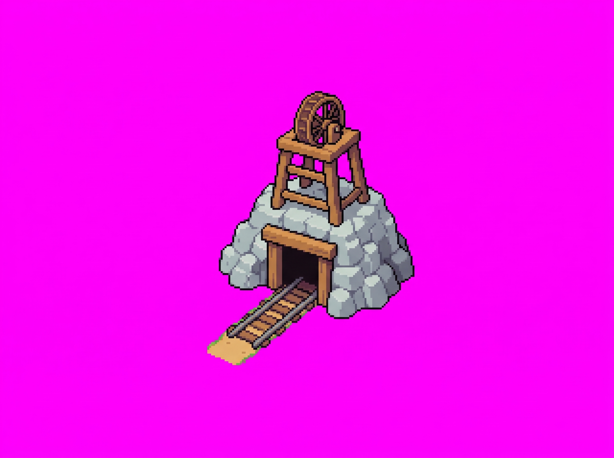
python tools/gen_sheets.py --pick st-mine 1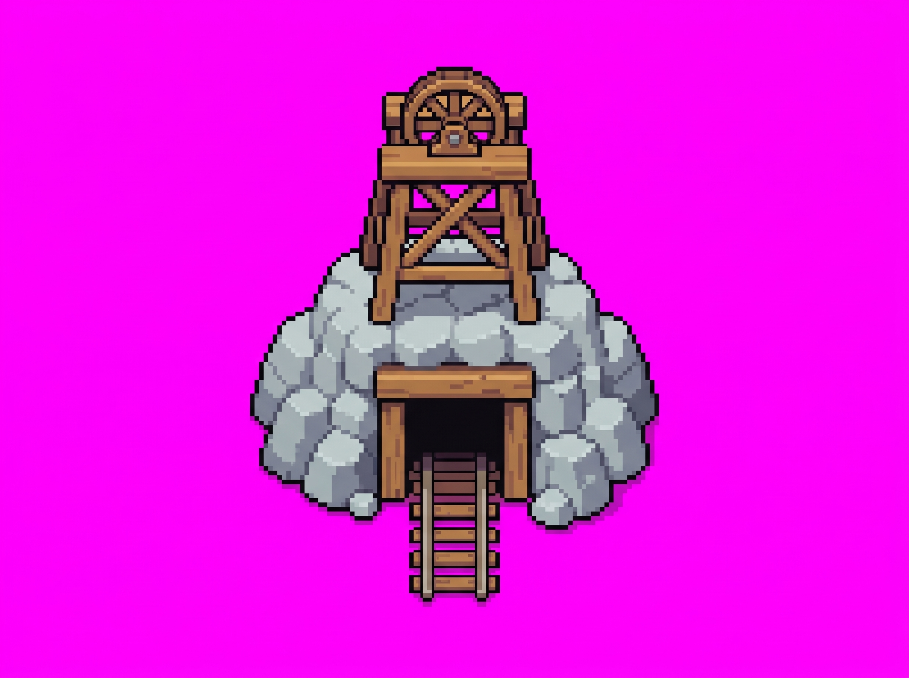
python tools/gen_sheets.py --pick st-mine 2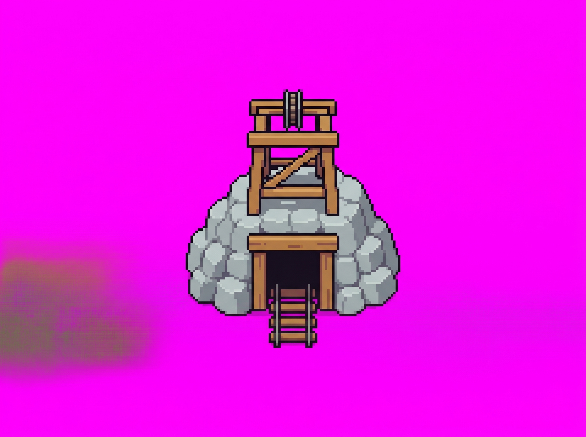
python tools/gen_sheets.py --pick st-mine 3No shadows. Pixel-art sprite sheet in exactly the style and palette of the attached image. Crisp hard pixels on a strict grid, no anti-aliasing, no blur, no gradients, each sprite with a dark 1-pixel outline, drawn at its final size with no finer detail than that size can hold. One three-quarter top-down projection, never isometric. Sprites in a neat grid with even spacing on a flat solid #FF00FF magenta background, nothing touching, no ground under them, no text unless asked. Bright yellow and bright red appear nowhere. Research as a station: a small mine entrance in a rocky mound, a wooden headframe with a wheel on top, a mine-cart track running into the entrance. One picture, alone on the magenta. Every building faces the viewer: its front wall parallel to the bottom edge of the image, the door in the middle of the front, seen slightly from above, exactly like the task board in the attached sheet b1-core. Never turned at an angle, never isometric. No ground under the building: no patch of grass, no base square, no plinth of earth. Draw it small, at the pixel size of the attached sheet b1-core: the building takes about a third of the image's width, with wide magenta all round; never filling the frame. No frames, no boxes, no grid lines, no borders between sprites; each sprite floats alone on the magenta. No shadows, no smoke, no glow. Keep exactly the colours of the attached frame F1: the grass as saturated and bright as in it (about #7cbd40), the paths warm sand (about #e4b469); warm honey wood, light cool stone, teal and plum cloth, cream bone. No yellow, no orange and no red anywhere: those colours are reserved for the product's signals. The wood a muted honey brown, never orange. Output the sheet as a PNG image. Attached, in order: f1-town, b1-core, roles-2. F1 is the approved frame: its style and colours rule. References: f1-town.jpg, b1-core.jpg, ../0.3/roles-2.jpg
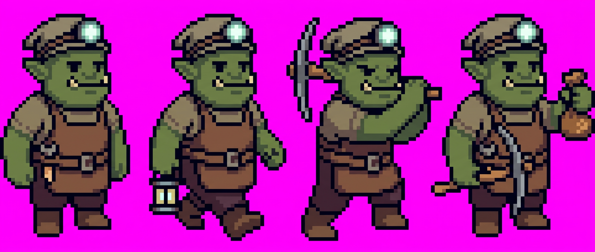
python tools/gen_sheets.py --pick o7-prospector 1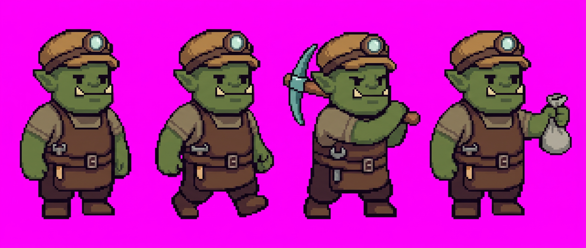
python tools/gen_sheets.py --pick o7-prospector 2python tools/gen_sheets.py --pick o7-prospector 3No shadows. Pixel-art sprite sheet in exactly the style and palette of the attached image. Crisp hard pixels on a strict grid, no anti-aliasing, no blur, no gradients, each sprite with a dark 1-pixel outline, drawn at its final size with no finer detail than that size can hold. One three-quarter top-down projection, never isometric. Sprites in a neat grid with even spacing on a flat solid #FF00FF magenta background, nothing touching, no ground under them, no text unless asked. Bright yellow and bright red appear nowhere. The worker orc as the Prospector (the keeper of the mine), four poses in one row: standing facing the viewer; walking; swinging a pick; holding up a small sack. A miner's lamp on the cap, its light teal-white (never yellow), a pick, a small sack. The same orc as the attached sheets roles-2 and o3-states-r1: a cloth cap, a leather apron over a shirt, a tool belt, olive-moss skin, small tusks; the same pixel size and proportions as in them, the same outline. The same facing in every frame; each frame a clear step of the movement. No frames, no boxes, no grid lines, no borders between sprites; each sprite floats alone on the magenta. No shadows, no smoke, no glow. Keep exactly the colours of the attached frame F1: the grass as saturated and bright as in it (about #7cbd40), the paths warm sand (about #e4b469); warm honey wood, light cool stone, teal and plum cloth, cream bone. No yellow, no orange and no red anywhere: those colours are reserved for the product's signals. The wood a muted honey brown, never orange. Output the sheet as a PNG image. Attached, in order: f1-town, roles-2, o3-states-r1, b1-core. F1 is the approved frame: its style and colours rule. References: f1-town.jpg, ../0.3/roles-2.jpg, o3-states-r1.jpg, b1-core.jpg
python tools/gen_sheets.py --pick k1-classes 1python tools/gen_sheets.py --pick k1-classes 2python tools/gen_sheets.py --pick k1-classes 3No shadows. Pixel-art sprite sheet in exactly the style and palette of the attached image. Crisp hard pixels on a strict grid, no anti-aliasing, no blur, no gradients, each sprite with a dark 1-pixel outline, drawn at its final size with no finer detail than that size can hold. One three-quarter top-down projection, never isometric. Sprites in a neat grid with even spacing on a flat solid #FF00FF magenta background, nothing touching, no ground under them, no text unless asked. Bright yellow and bright red appear nowhere. Eleven player characters, one each, front-facing, full body, in two rows, funny and friendly and readable at small size: 1. Burnout Peon: a tired orc in a hoodie with a coffee mug. 2. Bug Ork: an orc with a magnifying glass and a bug jar. 3. The Jira Lich: a lich in a robe holding a ticket board. 4. Roadmap Mummy: a mummy holding a long rolled roadmap. 5. Gradient-Sick Elf: a dizzy elf with a colour palette. 6. Lore Elf: an elf with a big book of lore. 7. Keyword Gnome: a gnome with a magnifier over word tags. 8. Growth-Hack Gnome: a gnome with a megaphone-shaped bone horn and a rising chart. 9. Data-Mining Goblin: a goblin with a pickaxe and glowing teal data crystals. 10. Indie Knight: a small knight with a laptop as a shield. 11. Wandering Ghost: a friendly ghost with a lantern, its light teal-white. Drawn with exactly the same pixel size as the orcs of the attached sheet roles-2, each figure about as tall as one of them, the same dark outline. No frames, no boxes, no grid lines, no borders between sprites; each sprite floats alone on the magenta. No shadows, no smoke, no glow. Keep exactly the colours of the attached frame F1: the grass as saturated and bright as in it (about #7cbd40), the paths warm sand (about #e4b469); warm honey wood, light cool stone, teal and plum cloth, cream bone. No yellow, no orange and no red anywhere: those colours are reserved for the product's signals. The wood a muted honey brown, never orange. Output the sheet as a PNG image. Attached, in order: f1-town, roles-2, b1-core. F1 is the approved frame: its style and colours rule. References: f1-town.jpg, ../0.3/roles-2.jpg, b1-core.jpg
python tools/gen_sheets.py --pick g4-growth 1python tools/gen_sheets.py --pick g4-growth 2python tools/gen_sheets.py --pick g4-growth 3No shadows. Pixel-art sprite sheet in exactly the style and palette of the attached image. Crisp hard pixels on a strict grid, no anti-aliasing, no blur, no gradients, each sprite with a dark 1-pixel outline, drawn at its final size with no finer detail than that size can hold. One three-quarter top-down projection, never isometric. Sprites in a neat grid with even spacing on a flat solid #FF00FF magenta background, nothing touching, no ground under them, no text unless asked. Bright yellow and bright red appear nowhere. Growth marks for the buildings of the attached sheet b1-core, eight pieces in two rows: a footing of stone courses under a building, one course, two courses, three courses (wide and low, about the work hall's width); a cloth banner for a roof on a short pole in ivory; the same ivory banner on a taller pole; a teal-and-plum banner with a crest on the tallest pole (no gold); a lean-to roof over stacked logs (wide and low); a crystal on a whetstone (tall and narrow). Every building faces the viewer: its front wall parallel to the bottom edge of the image, the door in the middle of the front, seen slightly from above, exactly like the task board in the attached sheet b1-core. Never turned at an angle, never isometric. No ground under the building: no patch of grass, no base square, no plinth of earth. No frames, no boxes, no grid lines, no borders between sprites; each sprite floats alone on the magenta. No shadows, no smoke, no glow. Keep exactly the colours of the attached frame F1: the grass as saturated and bright as in it (about #7cbd40), the paths warm sand (about #e4b469); warm honey wood, light cool stone, teal and plum cloth, cream bone. No yellow, no orange and no red anywhere: those colours are reserved for the product's signals. The wood a muted honey brown, never orange. Output the sheet as a PNG image. Attached, in order: f1-town, b1-core, roles-2. F1 is the approved frame: its style and colours rule. References: f1-town.jpg, b1-core.jpg, ../0.3/roles-2.jpg
python tools/gen_sheets.py --pick k2-homes 1python tools/gen_sheets.py --pick k2-homes 2python tools/gen_sheets.py --pick k2-homes 3No shadows. Pixel-art sprite sheet in exactly the style and palette of the attached image. Crisp hard pixels on a strict grid, no anti-aliasing, no blur, no gradients, each sprite with a dark 1-pixel outline, drawn at its final size with no finer detail than that size can hold. One three-quarter top-down projection, never isometric. Sprites in a neat grid with even spacing on a flat solid #FF00FF magenta background, nothing touching, no ground under them, no text unless asked. Bright yellow and bright red appear nowhere. Seven small homes, one for each kin of the person who hires the camp, each about the size of a small building of the attached sheet b1-core (64–96 px wide), in one or two rows: 1. a lich's crypt of pale stone; 2. an elf's tree house; 3. a gnome's burrow in a mound with a round door; 4. a knight's tent with a crest; 5. a ruined shrine for a ghost; 6. an orc dugout with a log roof; 7. a goblin's shack with crates. Every building faces the viewer: its front wall parallel to the bottom edge of the image, the door in the middle of the front, seen slightly from above, exactly like the task board in the attached sheet b1-core. Never turned at an angle, never isometric. No ground under the building: no patch of grass, no base square, no plinth of earth. No frames, no boxes, no grid lines, no borders between sprites; each sprite floats alone on the magenta. No shadows, no smoke, no glow. Keep exactly the colours of the attached frame F1: the grass as saturated and bright as in it (about #7cbd40), the paths warm sand (about #e4b469); warm honey wood, light cool stone, teal and plum cloth, cream bone. No yellow, no orange and no red anywhere: those colours are reserved for the product's signals. The wood a muted honey brown, never orange. Output the sheet as a PNG image. Attached, in order: f1-town, b1-core, roles-2. F1 is the approved frame: its style and colours rule. References: f1-town.jpg, b1-core.jpg, ../0.3/roles-2.jpg
python tools/gen_sheets.py --pick c2-fix 1python tools/gen_sheets.py --pick c2-fix 2python tools/gen_sheets.py --pick c2-fix 3No shadows. Pixel-art sprite sheet in exactly the style and palette of the attached image. Crisp hard pixels on a strict grid, no anti-aliasing, no blur, no gradients, each sprite with a dark 1-pixel outline, drawn at its final size with no finer detail than that size can hold. One three-quarter top-down projection, never isometric. Sprites in a neat grid with even spacing on a flat solid #FF00FF magenta background, nothing touching, no ground under them, no text unless asked. Bright yellow and bright red appear nowhere. Two track tiles drawn on EXACTLY the gauge of the attached sheet c2's straight pieces: the two rails 32 art px apart, centred on the tile, running all the way to the tile's edges, the ties spaced as on c2's straights. The last try came with the rails 44 px apart: that is wrong. 1. a curve joining the top side and the left side (north–west); 2. a T-junction with exits north, east and south (a straight from top to bottom with a branch curving off to the right). Each tile the same square size as c2's, magenta round each, apart. Flat from above, exactly like the attached track sheet c2: dark iron rails on honey-wood ties, the ties evenly spaced. No frames, no boxes, no grid lines, no borders between sprites; each sprite floats alone on the magenta. No shadows, no smoke, no glow. Keep exactly the colours of the attached frame F1: the grass as saturated and bright as in it (about #7cbd40), the paths warm sand (about #e4b469); warm honey wood, light cool stone, teal and plum cloth, cream bone. No yellow, no orange and no red anywhere: those colours are reserved for the product's signals. The wood a muted honey brown, never orange. Output the sheet as a PNG image. Attached, in order: f1-town, c2-track. F1 is the approved frame: its style and colours rule. References: f1-town.jpg, c2-track.jpg
python tools/gen_sheets.py --pick u6-inside 1python tools/gen_sheets.py --pick u6-inside 2python tools/gen_sheets.py --pick u6-inside 3No shadows. Pixel-art sprite sheet in exactly the style and palette of the attached image. Crisp hard pixels on a strict grid, no anti-aliasing, no blur, no gradients, each sprite with a dark 1-pixel outline, drawn at its final size with no finer detail than that size can hold. One three-quarter top-down projection, never isometric. Sprites in a neat grid with even spacing on a flat solid #FF00FF magenta background, nothing touching, no ground under them, no text unless asked. Bright yellow and bright red appear nowhere. The inside of a small wooden dispatcher's booth seen front-on from slightly above, warm light, a plank floor and beams, empty of characters, about 480 × 300 px; three tall wooden boards side by side with blank carved headers, a window to the track. No text. Draw it small, at the pixel size of the attached sheet b1-core: the building takes about a third of the image's width, with wide magenta all round; never filling the frame. No frames, no boxes, no grid lines, no borders between sprites; each sprite floats alone on the magenta. No shadows, no smoke, no glow. Keep exactly the colours of the attached frame F1: the grass as saturated and bright as in it (about #7cbd40), the paths warm sand (about #e4b469); warm honey wood, light cool stone, teal and plum cloth, cream bone. No yellow, no orange and no red anywhere: those colours are reserved for the product's signals. The wood a muted honey brown, never orange. Output the sheet as a PNG image. Attached, in order: f1-town, st-dispatch. F1 is the approved frame: its style and colours rule. References: f1-town.jpg, st-dispatch.jpg
python tools/gen_sheets.py --pick u6-cards 1python tools/gen_sheets.py --pick u6-cards 2python tools/gen_sheets.py --pick u6-cards 3No shadows. Pixel-art sprite sheet in exactly the style and palette of the attached image. Crisp hard pixels on a strict grid, no anti-aliasing, no blur, no gradients, each sprite with a dark 1-pixel outline, drawn at its final size with no finer detail than that size can hold. One three-quarter top-down projection, never isometric. Sprites in a neat grid with even spacing on a flat solid #FF00FF magenta background, nothing touching, no ground under them, no text unless asked. Bright yellow and bright red appear nowhere. Pieces for cards on the boards inside the booth, on magenta: a parchment sheet and a light stone slab, each as nine-slice pieces (top with corners, a middle that repeats downward, bottom with corners); bone pins; a small cloth flag on a pin, lowered and raised, in teal and plum; a lever. No frames, no boxes, no grid lines, no borders between sprites; each sprite floats alone on the magenta. No shadows, no smoke, no glow. Keep exactly the colours of the attached frame F1: the grass as saturated and bright as in it (about #7cbd40), the paths warm sand (about #e4b469); warm honey wood, light cool stone, teal and plum cloth, cream bone. No yellow, no orange and no red anywhere: those colours are reserved for the product's signals. The wood a muted honey brown, never orange. Output the sheet as a PNG image. Attached, in order: f1-town, st-dispatch. F1 is the approved frame: its style and colours rule. References: f1-town.jpg, st-dispatch.jpg
python tools/gen_sheets.py --pick u2-panels 1python tools/gen_sheets.py --pick u2-panels 2python tools/gen_sheets.py --pick u2-panels 3No shadows. Pixel-art sprite sheet in exactly the style and palette of the attached image. Crisp hard pixels on a strict grid, no anti-aliasing, no blur, no gradients, each sprite with a dark 1-pixel outline, drawn at its final size with no finer detail than that size can hold. One three-quarter top-down projection, never isometric. Sprites in a neat grid with even spacing on a flat solid #FF00FF magenta background, nothing touching, no ground under them, no text unless asked. Bright yellow and bright red appear nowhere. Pixel UI panels as nine-slice pieces on an 8-px grid: a cream parchment panel in a dark walnut frame with small teal corner studs (a merchant's window); a dark terminal panel in the same walnut frame; tabs to sit on a panel's top edge, active and inactive; a square 48 × 48 action button in a walnut frame in three states (normal, hover, pressed); an "Exit" button with an arrow. No frames, no boxes, no grid lines, no borders between sprites; each sprite floats alone on the magenta. No shadows, no smoke, no glow. Keep exactly the colours of the attached frame F1: the grass as saturated and bright as in it (about #7cbd40), the paths warm sand (about #e4b469); warm honey wood, light cool stone, teal and plum cloth, cream bone. No yellow, no orange and no red anywhere: those colours are reserved for the product's signals. The wood a muted honey brown, never orange. Output the sheet as a PNG image. Attached, in order: f1-town. F1 is the approved frame: its style and colours rule. References: f1-town.jpg
python tools/gen_sheets.py --pick c3-switches 1python tools/gen_sheets.py --pick c3-switches 2python tools/gen_sheets.py --pick c3-switches 3No shadows. Pixel-art sprite sheet in exactly the style and palette of the attached image. Crisp hard pixels on a strict grid, no anti-aliasing, no blur, no gradients, each sprite with a dark 1-pixel outline, drawn at its final size with no finer detail than that size can hold. One three-quarter top-down projection, never isometric. Sprites in a neat grid with even spacing on a flat solid #FF00FF magenta background, nothing touching, no ground under them, no text unless asked. Bright yellow and bright red appear nowhere. Track pieces drawn on EXACTLY the gauge of the attached sheet c2's straight pieces: the two rails 32 art px apart, centred on the tile, running all the way to the tile's edges, the ties spaced as on c2's straights. Five pieces with magenta round each: 1. one 64 × 64 tile, a T-junction with exits north, east and south (a straight from top to bottom, a branch curving off to the right edge's middle). 2. and 3. a small switch stand beside the track, about 16 × 24 px: a short wooden post with an iron lever at its foot and a flat target arm on top; in 2 the lever leans left and the arm is level, in 3 the lever leans right and the arm points up. The two must differ by position only, the same colours. 4. a pocket, three tiles long: a straight east–west line, and above it a second track one tile long parallel to it, joined to the line at both ends by short switch curves (in from the left, out to the right). 5. one 64 × 64 tile of a level crossing: wooden planks laid between and beside the rails of a straight east–west line, square to it, for a path to cross. Flat from above, exactly like the attached track sheet c2: dark iron rails on honey-wood ties, the ties evenly spaced. No frames, no boxes, no grid lines, no borders between sprites; each sprite floats alone on the magenta. No shadows, no smoke, no glow. Keep exactly the colours of the attached frame F1: the grass as saturated and bright as in it (about #7cbd40), the paths warm sand (about #e4b469); warm honey wood, light cool stone, teal and plum cloth, cream bone. No yellow, no orange and no red anywhere: those colours are reserved for the product's signals. The wood a muted honey brown, never orange. Output the sheet as a PNG image. Attached, in order: f1-town, c2-track, c1-carts. F1 is the approved frame: its style and colours rule. References: f1-town.jpg, c2-track.jpg, c1-carts.jpg
python tools/gen_sheets.py --pick c1-ends 1python tools/gen_sheets.py --pick c1-ends 2python tools/gen_sheets.py --pick c1-ends 3No shadows. Pixel-art sprite sheet in exactly the style and palette of the attached image. Crisp hard pixels on a strict grid, no anti-aliasing, no blur, no gradients, each sprite with a dark 1-pixel outline, drawn at its final size with no finer detail than that size can hold. One three-quarter top-down projection, never isometric. Sprites in a neat grid with even spacing on a flat solid #FF00FF magenta background, nothing touching, no ground under them, no text unless asked. Bright yellow and bright red appear nowhere. The mine cart of the attached sheet c1-carts, at exactly its pixel size and colours, seen straight from the front and straight from the back (as it comes towards the viewer and as it goes away), four pieces in one row: 1. front, empty; 2. front, loaded with a wrapped bundle as in c1; 3. back, empty; 4. back, loaded. The wheels and the axle seen end-on; the same honey wood and iron bands. No frames, no boxes, no grid lines, no borders between sprites; each sprite floats alone on the magenta. No shadows, no smoke, no glow. Keep exactly the colours of the attached frame F1: the grass as saturated and bright as in it (about #7cbd40), the paths warm sand (about #e4b469); warm honey wood, light cool stone, teal and plum cloth, cream bone. No yellow, no orange and no red anywhere: those colours are reserved for the product's signals. The wood a muted honey brown, never orange. Output the sheet as a PNG image. Attached, in order: f1-town, c1-carts. F1 is the approved frame: its style and colours rule. References: f1-town.jpg, c1-carts.jpg
python tools/gen_sheets.py --pick st-depot 1python tools/gen_sheets.py --pick st-depot 2python tools/gen_sheets.py --pick st-depot 3python tools/gen_sheets.py --pick st-depot 4python tools/gen_sheets.py --pick st-depot 5python tools/gen_sheets.py --pick st-depot 6No shadows. Pixel-art sprite sheet in exactly the style and palette of the attached image. Crisp hard pixels on a strict grid, no anti-aliasing, no blur, no gradients, each sprite with a dark 1-pixel outline, drawn at its final size with no finer detail than that size can hold. One three-quarter top-down projection, never isometric. Sprites in a neat grid with even spacing on a flat solid #FF00FF magenta background, nothing touching, no ground under them, no text unless asked. Bright yellow and bright red appear nowhere. The camp's depot: a long timber engine shed standing right on a mine-cart track, the largest building of the camp, about twice as wide as the work hall of the attached sheet b1-core. We see its long side front-on; the track (exactly the gauge of the attached sheet c2) runs straight through it from left to right along its foot and out at both ends: carts drive in at the left end and out at the right end. A pitched plank roof with a vent ridge; an arched gateway with plank doors folded open at each end, the rails passing through; in the long front wall three wide open bays side by side, each showing the track inside, EMPTY: no carts anywhere, no characters. Then, apart on the magenta: 2. one bay's plank doors shut, to lay over a bay; 3. and 4. a small railway semaphore on a post, its arm level and its arm raised (the same colours, told apart by position). Every building faces the viewer: its front wall parallel to the bottom edge of the image, the door in the middle of the front, seen slightly from above, exactly like the task board in the attached sheet b1-core. Never turned at an angle, never isometric. No ground under the building: no patch of grass, no base square, no plinth of earth. No frames, no boxes, no grid lines, no borders between sprites; each sprite floats alone on the magenta. No shadows, no smoke, no glow. Keep exactly the colours of the attached frame F1: the grass as saturated and bright as in it (about #7cbd40), the paths warm sand (about #e4b469); warm honey wood, light cool stone, teal and plum cloth, cream bone. No yellow, no orange and no red anywhere: those colours are reserved for the product's signals. The wood a muted honey brown, never orange. Output the sheet as a PNG image. Attached, in order: f1-town, b1-core, c1-carts, c2-track. F1 is the approved frame: its style and colours rule. References: f1-town.jpg, b1-core.jpg, c1-carts.jpg, c2-track.jpg
python tools/gen_sheets.py --pick l1-logo 1python tools/gen_sheets.py --pick l1-logo 2python tools/gen_sheets.py --pick l1-logo 3No shadows. Pixel-art sprite sheet in exactly the style and palette of the attached image. Crisp hard pixels on a strict grid, no anti-aliasing, no blur, no gradients, each sprite with a dark 1-pixel outline, drawn at its final size with no finer detail than that size can hold. One three-quarter top-down projection, never isometric. Sprites in a neat grid with even spacing on a flat solid #FF00FF magenta background, nothing touching, no ground under them, no text unless asked. Bright yellow and bright red appear nowhere. Concepts for an app's logo mark, four variants in a 2 × 2 grid, each alone on the magenta: the head of an orc seen straight from the front (this overrides any top-down projection above), flat, 3–4 colours, bold simple shapes that still read at 16 px. The orc of the attached sheet roles-2: olive-moss skin, a cloth cap, two small tusks; it wears round glasses with big lenses and a thin bridge, a small teal glint in each lens (never yellow); kind and focused, never angry. Vary the cap's shape and the glasses' size between the four. No text, no letters, no frame, no background shape. No frames, no boxes, no grid lines, no borders between sprites; each sprite floats alone on the magenta. No shadows, no smoke, no glow. Keep exactly the colours of the attached frame F1: the grass as saturated and bright as in it (about #7cbd40), the paths warm sand (about #e4b469); warm honey wood, light cool stone, teal and plum cloth, cream bone. No yellow, no orange and no red anywhere: those colours are reserved for the product's signals. The wood a muted honey brown, never orange. Output the sheet as a PNG image. Attached, in order: f1-town, roles-2. F1 is the approved frame: its style and colours rule. References: f1-town.jpg, ../0.3/roles-2.jpg
python tools/gen_sheets.py --pick k3-stages 1python tools/gen_sheets.py --pick k3-stages 2python tools/gen_sheets.py --pick k3-stages 3No shadows. Pixel-art sprite sheet in exactly the style and palette of the attached image. Crisp hard pixels on a strict grid, no anti-aliasing, no blur, no gradients, each sprite with a dark 1-pixel outline, drawn at its final size with no finer detail than that size can hold. One three-quarter top-down projection, never isometric. Sprites in a neat grid with even spacing on a flat solid #FF00FF magenta background, nothing touching, no ground under them, no text unless asked. Bright yellow and bright red appear nowhere. Heads and shoulders, front-facing, of the eleven characters of the attached sheet k1-classes, in the same order, each at three stages of growth: three rows (stage 2, stage 3, stage 4) of eleven, every head the same size, each stage adding its own headgear or prop. 1. Burnout Peon: sweat and tired eyes · a plum bandana and war paint · a horned iron helm. 2. Bug Ork: a magnifier on the eye · goggles up, the beetle caught · a beetle-shell helm. 3. The Jira Lich: a plum bow tie · a headset · a high plum collar. 4. Roadmap Mummy: a rolled roadmap · a map pin on the head · a bone band, the roadmap unrolled. 5. Gradient-Sick Elf: a rainbow of soft teal and plum · a ranger's green hood and a pencil · long hair, bone pins, swatches. 6. Lore Elf: a quill · a plum beret · long hair and a d20. 7. Keyword Gnome: a keyword tag · brass goggles · an ivory band under five stars. 8. Growth-Hack Gnome: an ivory star · a bone horn · an ivory band and a green arrow up. 9. Data-Mining Goblin: a miner's lamp · a pickaxe · a top hat and a monocle. 10. Indie Knight: a steel helm with a plum plume · a sprout on the helm · a white helm with a glowing teal visor. 11. Wandering Ghost: a straw hat · a captain's hat and an eye patch · a crest of open tabs. At stage 4 the eyes glow teal. No gold, no yellow, no red: ivory, bone, teal and plum instead. Drawn with exactly the same pixel size as the orcs of the attached sheet roles-2, each figure about as tall as one of them, the same dark outline. No frames, no boxes, no grid lines, no borders between sprites; each sprite floats alone on the magenta. No shadows, no smoke, no glow. Keep exactly the colours of the attached frame F1: the grass as saturated and bright as in it (about #7cbd40), the paths warm sand (about #e4b469); warm honey wood, light cool stone, teal and plum cloth, cream bone. No yellow, no orange and no red anywhere: those colours are reserved for the product's signals. The wood a muted honey brown, never orange. Output the sheet as a PNG image. Attached, in order: f1-town, roles-2, k1-classes. F1 is the approved frame: its style and colours rule. References: f1-town.jpg, ../0.3/roles-2.jpg, k1-classes.jpg
python tools/gen_sheets.py --pick k3-marketing 1python tools/gen_sheets.py --pick k3-marketing 2No shadows. Pixel-art sprite sheet in exactly the style and palette of the attached image. Crisp hard pixels on a strict grid, no anti-aliasing, no blur, no gradients, each sprite with a dark 1-pixel outline, drawn at its final size with no finer detail than that size can hold. One three-quarter top-down projection, never isometric. Sprites in a neat grid with even spacing on a flat solid #FF00FF magenta background, nothing touching, no ground under them, no text unless asked. Bright yellow and bright red appear nowhere. The Growth-Hack Gnome of the attached sheet k1-classes (a gnome with a bone horn and a rising chart), head and shoulders, front-facing, exactly the size and style of the heads in the attached sheet k3-stages, three in one row: stage 2 an ivory star on its cap; stage 3 holding a bone horn like a megaphone; stage 4 an ivory band on its head, a green arrow pointing up beside it, its eyes glowing teal. No gold, no yellow, no red. Drawn with exactly the same pixel size as the orcs of the attached sheet roles-2, each figure about as tall as one of them, the same dark outline. No frames, no boxes, no grid lines, no borders between sprites; each sprite floats alone on the magenta. No shadows, no smoke, no glow. Keep exactly the colours of the attached frame F1: the grass as saturated and bright as in it (about #7cbd40), the paths warm sand (about #e4b469); warm honey wood, light cool stone, teal and plum cloth, cream bone. No yellow, no orange and no red anywhere: those colours are reserved for the product's signals. The wood a muted honey brown, never orange. Output the sheet as a PNG image. Attached, in order: f1-town, k1-classes, k3-stages. F1 is the approved frame: its style and colours rule. References: f1-town.jpg, k1-classes.jpg, k3-stages.jpg
python tools/gen_sheets.py --pick g5-ground 1python tools/gen_sheets.py --pick g5-ground 2python tools/gen_sheets.py --pick g5-ground 3python tools/gen_sheets.py --pick g5-ground 4No shadows. Pixel-art sprite sheet in exactly the style and palette of the attached image. Crisp hard pixels on a strict grid, no anti-aliasing, no blur, no gradients, each sprite with a dark 1-pixel outline, drawn at its final size with no finer detail than that size can hold. One three-quarter top-down projection, never isometric. Sprites in a neat grid with even spacing on a flat solid #FF00FF magenta background, nothing touching, no ground under them, no text unless asked. Bright yellow and bright red appear nowhere. Ground tiles seen flat from straight above, every tile exactly the same 64 × 64 square, 28 tiles in a strict grid of 7 columns and 4 rows with thin magenta gaps, nothing drawn across the gaps. Grass as saturated and bright as in the attached frame F1 (about #7cbd40); earth the paths' warm sand (about #e4b469); flat, few marks, so a field of them never shows a pattern. Row 1: four plain grass tiles, each a little different; two grass tiles with a few small tufts; one grass tile with a few tiny white flowers. Row 2: three plain earth tiles, each a little different; one earth tile with a few small stones; one earth tile with two faint old cart ruts running left to right; one earth tile a step darker (the bed under rails); one grass tile with an earth edge along its bottom. Row 3: grass meeting earth: the grass tile with earth along its top, its left, its right; then the four outer corners (earth in one corner quarter only: top-left, top-right, bottom-left, bottom-right). Row 4: the four inner corners (earth everywhere but grass in one corner quarter: top-left, top-right, bottom-left, bottom-right); then a band of earth one tile wide turning from left to down, from left to up, and a T of earth from top to bottom with a branch to the right, for the track's curves and junction of the attached sheet c2. The grass's edge against the earth a soft ragged line, the same on every tile, meeting the tile's edges at the same place. No frames, no boxes, no grid lines, no borders between sprites; each sprite floats alone on the magenta. No shadows, no smoke, no glow. Keep exactly the colours of the attached frame F1: the grass as saturated and bright as in it (about #7cbd40), the paths warm sand (about #e4b469); warm honey wood, light cool stone, teal and plum cloth, cream bone. No yellow, no orange and no red anywhere: those colours are reserved for the product's signals. The wood a muted honey brown, never orange. Output the sheet as a PNG image. Attached, in order: f1-town, c2-track. F1 is the approved frame: its style and colours rule. References: f1-town.jpg, c2-track.jpg
python tools/gen_sheets.py --pick i1-items 1python tools/gen_sheets.py --pick i1-items 2python tools/gen_sheets.py --pick i1-items 3No shadows. Pixel-art sprite sheet in exactly the style and palette of the attached image. Crisp hard pixels on a strict grid, no anti-aliasing, no blur, no gradients, each sprite with a dark 1-pixel outline, drawn at its final size with no finer detail than that size can hold. One three-quarter top-down projection, never isometric. Sprites in a neat grid with even spacing on a flat solid #FF00FF magenta background, nothing touching, no ground under them, no text unless asked. Bright yellow and bright red appear nowhere. Sixteen small objects a player places on the grass of the camp, each alone, about the size of the decor in the attached sheet g2-decor (24–48 px), in a 4 × 4 grid, in this order: 1. a painter's easel; 2. a wooden signpost with an arrow up; 3. a small chest of teal crystals; 4. a crest banner on a pole, teal and plum; 5. a tombstone with a paper ticket pinned to it; 6. a statue of a beetle in a glass jar; 7. a lantern post, its light teal-white; 8. a small mine cart on a stone plinth; 9. a trophy cup of carved wood; 10. a log pile on a stone plinth; 11. an anvil; 12. an old railway semaphore on a post; 13. a stone statue of balance scales; 14. a small pennant on a pole; 15. a sundial on a stone base; 16. a whetstone on a stone plinth. Calm colours: wood, stone, bone, teal and plum. Every building faces the viewer: its front wall parallel to the bottom edge of the image, the door in the middle of the front, seen slightly from above, exactly like the task board in the attached sheet b1-core. Never turned at an angle, never isometric. No ground under the building: no patch of grass, no base square, no plinth of earth. No frames, no boxes, no grid lines, no borders between sprites; each sprite floats alone on the magenta. No shadows, no smoke, no glow. Keep exactly the colours of the attached frame F1: the grass as saturated and bright as in it (about #7cbd40), the paths warm sand (about #e4b469); warm honey wood, light cool stone, teal and plum cloth, cream bone. No yellow, no orange and no red anywhere: those colours are reserved for the product's signals. The wood a muted honey brown, never orange. Output the sheet as a PNG image. Attached, in order: f1-town, b1-core, g2-decor. F1 is the approved frame: its style and colours rule. References: f1-town.jpg, b1-core.jpg, g2-decor.jpg
python tools/gen_sheets.py --pick o7-moves 1python tools/gen_sheets.py --pick o7-moves 2python tools/gen_sheets.py --pick o7-moves 3No shadows. Pixel-art sprite sheet in exactly the style and palette of the attached image. Crisp hard pixels on a strict grid, no anti-aliasing, no blur, no gradients, each sprite with a dark 1-pixel outline, drawn at its final size with no finer detail than that size can hold. One three-quarter top-down projection, never isometric. Sprites in a neat grid with even spacing on a flat solid #FF00FF magenta background, nothing touching, no ground under them, no text unless asked. Bright yellow and bright red appear nowhere. The Prospector of the attached sheet o7-prospector (the capped orc with a miner's lamp on the cap, its light teal-white, a pick), three rows of six frames: 1. walking to the right; 2. digging: the pick raised, swung down, struck, pulled back; 3. carrying a small sack on the shoulder, walking to the right. The same orc as the attached sheets roles-2 and o3-states-r1: a cloth cap, a leather apron over a shirt, a tool belt, olive-moss skin, small tusks; the same pixel size and proportions as in them, the same outline. The same facing in every frame; each frame a clear step of the movement. No frames, no boxes, no grid lines, no borders between sprites; each sprite floats alone on the magenta. No shadows, no smoke, no glow. Keep exactly the colours of the attached frame F1: the grass as saturated and bright as in it (about #7cbd40), the paths warm sand (about #e4b469); warm honey wood, light cool stone, teal and plum cloth, cream bone. No yellow, no orange and no red anywhere: those colours are reserved for the product's signals. The wood a muted honey brown, never orange. Output the sheet as a PNG image. Attached, in order: f1-town, roles-2, o3-states-r1, o7-prospector. F1 is the approved frame: its style and colours rule. References: f1-town.jpg, ../0.3/roles-2.jpg, o3-states-r1.jpg, o7-prospector.jpg
python tools/gen_sheets.py --pick c4-steel 1python tools/gen_sheets.py --pick c4-steel 2python tools/gen_sheets.py --pick c4-steel 3No shadows. Pixel-art sprite sheet in exactly the style and palette of the attached image. Crisp hard pixels on a strict grid, no anti-aliasing, no blur, no gradients, each sprite with a dark 1-pixel outline, drawn at its final size with no finer detail than that size can hold. One three-quarter top-down projection, never isometric. Sprites in a neat grid with even spacing on a flat solid #FF00FF magenta background, nothing touching, no ground under them, no text unless asked. Bright yellow and bright red appear nowhere. Mine-cart track pieces in the manner of the attached target frame target-camp: thin steel-grey rails (light grey with a darker grey edge, never brown) on dark brown wooden sleepers, on a narrow bed of grey-brown gravel only a little wider than the sleepers. Exactly the gauge of the attached sheet c2: the two rails 32 px apart, centred on the tile, reaching the tile's edges. Every piece one 64 × 64 tile with magenta round it, in a grid: 1. straight left–right; 2. straight top–bottom; 3.–6. the four curves: top–right, right–bottom, bottom–left, left–top; 7. a junction top–right–bottom; 8. a junction left–right–top; 9. a junction left–right–bottom; 10. a buffer stop at the right end of a straight; 11. a level crossing: wooden planks laid between and beside the rails of a straight left–right. Flat from above, exactly like the attached track sheet c2: dark iron rails on honey-wood ties, the ties evenly spaced. No frames, no boxes, no grid lines, no borders between sprites; each sprite floats alone on the magenta. No shadows, no smoke, no glow. Keep exactly the colours of the attached frame F1: the grass as saturated and bright as in it (about #7cbd40), the paths warm sand (about #e4b469); warm honey wood, light cool stone, teal and plum cloth, cream bone. No yellow, no orange and no red anywhere: those colours are reserved for the product's signals. The wood a muted honey brown, never orange. Output the sheet as a PNG image. Attached, in order: f1-town, c2-track, target-camp. F1 is the approved frame: its style and colours rule. References: f1-town.jpg, c2-track.jpg, ../v4/target-camp.jpg
python tools/gen_sheets.py --pick c4-steel-2 1python tools/gen_sheets.py --pick c4-steel-2 2python tools/gen_sheets.py --pick c4-steel-2 3No shadows. Pixel-art sprite sheet in exactly the style and palette of the attached image. Crisp hard pixels on a strict grid, no anti-aliasing, no blur, no gradients, each sprite with a dark 1-pixel outline, drawn at its final size with no finer detail than that size can hold. One three-quarter top-down projection, never isometric. Sprites in a neat grid with even spacing on a flat solid #FF00FF magenta background, nothing touching, no ground under them, no text unless asked. Bright yellow and bright red appear nowhere. Mine-cart track tiles, seen flat from straight above: thin steel-grey rails (light grey, a darker grey edge) on dark brown sleepers, on a narrow strip of grey-brown gravel a little wider than the sleepers. Exactly the gauge of the attached sheet c2: the rails 32 px apart and centred, so every piece's rails cross a tile's edge at exactly the same place, at the middle of that edge. EVERY piece is exactly ONE square tile of 64 × 64 px, no piece larger, eight tiles in one row with a magenta gap between them: 1. straight left–right; 2. straight top–bottom; 3. a curve from the middle of the top edge to the middle of the right edge, turning inside the one tile (a quarter circle of radius 32 px round the tile's top-right corner); 4. the same curve right–bottom; 5. bottom–left; 6. left–top; 7. a T: a straight top–bottom with a branch curving off to the middle of the right edge, inside the tile; 8. a buffer stop: a straight from the left edge ending at a small timber stop. Flat from above, exactly like the attached track sheet c2: dark iron rails on honey-wood ties, the ties evenly spaced. No frames, no boxes, no grid lines, no borders between sprites; each sprite floats alone on the magenta. No shadows, no smoke, no glow. Keep exactly the colours of the attached frame F1: the grass as saturated and bright as in it (about #7cbd40), the paths warm sand (about #e4b469); warm honey wood, light cool stone, teal and plum cloth, cream bone. No yellow, no orange and no red anywhere: those colours are reserved for the product's signals. The wood a muted honey brown, never orange. Output the sheet as a PNG image. Attached, in order: f1-town, c2-track, target-camp. F1 is the approved frame: its style and colours rule. References: f1-town.jpg, c2-track.jpg, ../v4/target-camp.jpg
python tools/gen_sheets.py --pick g3-stakes-2 1python tools/gen_sheets.py --pick g3-stakes-2 2python tools/gen_sheets.py --pick g3-stakes-2 3No shadows. Pixel-art sprite sheet in exactly the style and palette of the attached image. Crisp hard pixels on a strict grid, no anti-aliasing, no blur, no gradients, each sprite with a dark 1-pixel outline, drawn at its final size with no finer detail than that size can hold. One three-quarter top-down projection, never isometric. Sprites in a neat grid with even spacing on a flat solid #FF00FF magenta background, nothing touching, no ground under them, no text unless asked. Bright yellow and bright red appear nowhere. Three more pieces for the palisade of sharpened stakes of the attached frame target-camp (narrow logs with pointed tops, honey-brown, a dark outline, about 40 px tall), each alone on magenta: 1. a gateway: the run of stakes with a two-stake opening in its middle, the stakes either side of it a little taller; 2. the palisade running from the top of the image to the bottom, seen from above and a little in front: a column of stake tops one stake wide, that repeats downward; 3. a corner where the front run meets that column. No frames, no boxes, no grid lines, no borders between sprites; each sprite floats alone on the magenta. No shadows, no smoke, no glow. Keep exactly the colours of the attached frame F1: the grass as saturated and bright as in it (about #7cbd40), the paths warm sand (about #e4b469); warm honey wood, light cool stone, teal and plum cloth, cream bone. No yellow, no orange and no red anywhere: those colours are reserved for the product's signals. The wood a muted honey brown, never orange. Output the sheet as a PNG image. Attached, in order: f1-town, target-camp. F1 is the approved frame: its style and colours rule. References: f1-town.jpg, ../v4/target-camp.jpg
python tools/gen_sheets.py --pick g3-stakes 1python tools/gen_sheets.py --pick g3-stakes 2python tools/gen_sheets.py --pick g3-stakes 3No shadows. Pixel-art sprite sheet in exactly the style and palette of the attached image. Crisp hard pixels on a strict grid, no anti-aliasing, no blur, no gradients, each sprite with a dark 1-pixel outline, drawn at its final size with no finer detail than that size can hold. One three-quarter top-down projection, never isometric. Sprites in a neat grid with even spacing on a flat solid #FF00FF magenta background, nothing touching, no ground under them, no text unless asked. Bright yellow and bright red appear nowhere. A palisade of sharpened wooden stakes in the manner of the attached target frame target-camp, thinner and lower than the attached sheet g3-palisade: stakes about 40 px tall, each a narrow log with a pointed top, set close side by side, honey-brown wood with a dark outline. Front-on. Six pieces with magenta round each: 1. a straight run of eight stakes (it repeats left to right); 2. a gap in the run (a gateway two stakes wide); 3. the run's left end; 4. its right end; 5. the palisade seen running top to bottom, from the side (it repeats downward); 6. one corner post. No frames, no boxes, no grid lines, no borders between sprites; each sprite floats alone on the magenta. No shadows, no smoke, no glow. Keep exactly the colours of the attached frame F1: the grass as saturated and bright as in it (about #7cbd40), the paths warm sand (about #e4b469); warm honey wood, light cool stone, teal and plum cloth, cream bone. No yellow, no orange and no red anywhere: those colours are reserved for the product's signals. The wood a muted honey brown, never orange. Output the sheet as a PNG image. Attached, in order: f1-town, target-camp, g3-palisade. F1 is the approved frame: its style and colours rule. References: f1-town.jpg, ../v4/target-camp.jpg, g3-palisade.jpg
python tools/gen_sheets.py --pick b6-houses 1python tools/gen_sheets.py --pick b6-houses 2python tools/gen_sheets.py --pick b6-houses 3No shadows. Pixel-art sprite sheet in exactly the style and palette of the attached image. Crisp hard pixels on a strict grid, no anti-aliasing, no blur, no gradients, each sprite with a dark 1-pixel outline, drawn at its final size with no finer detail than that size can hold. One three-quarter top-down projection, never isometric. Sprites in a neat grid with even spacing on a flat solid #FF00FF magenta background, nothing touching, no ground under them, no text unless asked. Bright yellow and bright red appear nowhere. Eight small houses in the common palette of the attached target frame target-camp (teal cloth and roofs, rust-red wood, light grey stone, honey wood), each alone on magenta, front-on, the door in the middle: 1. the Review board: a round timber meeting hall with a teal cloth roof and a carved table seen through its open front, about as large as the work hall of the attached sheet b1-core; then seven homes, each smaller (about 96 px wide), one for each kin of the person: 2. a lich's home: a grey-stone crypt house with a teal door; 3. an elf's home: a timber house in a tree with a teal roof; 4. a gnome's home: a round-doored house in a grassy mound; 5. a knight's home: a stone cottage with a teal banner; 6. a ghost's home: a small old chapel of grey stone, whole, not a ruin; 7. an orc's home: a log house with a rust roof; 8. a goblin's home: a shack of rust planks and crates with a teal awning. Every building faces the viewer: its front wall parallel to the bottom edge of the image, the door in the middle of the front, seen slightly from above, exactly like the task board in the attached sheet b1-core. Never turned at an angle, never isometric. No ground under the building: no patch of grass, no base square, no plinth of earth. No frames, no boxes, no grid lines, no borders between sprites; each sprite floats alone on the magenta. No shadows, no smoke, no glow. Keep exactly the colours of the attached frame F1: the grass as saturated and bright as in it (about #7cbd40), the paths warm sand (about #e4b469); warm honey wood, light cool stone, teal and plum cloth, cream bone. No yellow, no orange and no red anywhere: those colours are reserved for the product's signals. The wood a muted honey brown, never orange. Output the sheet as a PNG image. Attached, in order: f1-town, b1-core, target-camp. F1 is the approved frame: its style and colours rule. References: f1-town.jpg, b1-core.jpg, ../v4/target-camp.jpg
python tools/gen_sheets.py --pick g6-wild 1python tools/gen_sheets.py --pick g6-wild 2python tools/gen_sheets.py --pick g6-wild 3No shadows. Pixel-art sprite sheet in exactly the style and palette of the attached image. Crisp hard pixels on a strict grid, no anti-aliasing, no blur, no gradients, each sprite with a dark 1-pixel outline, drawn at its final size with no finer detail than that size can hold. One three-quarter top-down projection, never isometric. Sprites in a neat grid with even spacing on a flat solid #FF00FF magenta background, nothing touching, no ground under them, no text unless asked. Bright yellow and bright red appear nowhere. The wilderness round a camp in the manner of the attached target frame target-camp, each piece alone on magenta, at the scale of the attached sheet g2-decor: 1.–4. four leafy trees, round dark-green crowns with lighter leaves, different shapes; 5.–6. two pines; 7.–9. three bushes, small to large; 10. a small pond of bright turquoise water with a grassy, earthy rim, about 128 px wide; 11. a short wooden jetty for its edge; 12.–13. two clusters of grey rocks; 14. a fallen log with moss. Every building faces the viewer: its front wall parallel to the bottom edge of the image, the door in the middle of the front, seen slightly from above, exactly like the task board in the attached sheet b1-core. Never turned at an angle, never isometric. No ground under the building: no patch of grass, no base square, no plinth of earth. No frames, no boxes, no grid lines, no borders between sprites; each sprite floats alone on the magenta. No shadows, no smoke, no glow. Keep exactly the colours of the attached frame F1: the grass as saturated and bright as in it (about #7cbd40), the paths warm sand (about #e4b469); warm honey wood, light cool stone, teal and plum cloth, cream bone. No yellow, no orange and no red anywhere: those colours are reserved for the product's signals. The wood a muted honey brown, never orange. Output the sheet as a PNG image. Attached, in order: f1-town, b1-core, target-camp, g2-decor. F1 is the approved frame: its style and colours rule. References: f1-town.jpg, b1-core.jpg, ../v4/target-camp.jpg, g2-decor.jpg
python tools/gen_sheets.py --pick k4-goblin 1python tools/gen_sheets.py --pick k4-goblin 2No shadows. Pixel-art sprite sheet in exactly the style and palette of the attached image. Crisp hard pixels on a strict grid, no anti-aliasing, no blur, no gradients, each sprite with a dark 1-pixel outline, drawn at its final size with no finer detail than that size can hold. One three-quarter top-down projection, never isometric. Sprites in a neat grid with even spacing on a flat solid #FF00FF magenta background, nothing touching, no ground under them, no text unless asked. Bright yellow and bright red appear nowhere. The Data-Mining Goblin of the attached sheet k1-classes redrawn so it never reads as an orc, even at 16 px: a goblin, much bigger and longer ears (clearly wider than its head), a smaller head, a thin body, NO tusks, a long pointed nose, bigger eyes, cool pale grey-green skin (no yellow); it still carries a pickaxe and glowing teal data crystals. Four pieces in one row, each alone on magenta: 1. full body, front-facing, the size of the figures of k1-classes; then its head and shoulders, the size of the heads of the attached sheet k3-stages, at three stages of growth: 2. a miner's lamp on its head; 3. a pickaxe on its shoulder; 4. a top hat and a monocle, its eyes glowing teal. Drawn with exactly the same pixel size as the orcs of the attached sheet roles-2, each figure about as tall as one of them, the same dark outline. No frames, no boxes, no grid lines, no borders between sprites; each sprite floats alone on the magenta. No shadows, no smoke, no glow. Keep exactly the colours of the attached frame F1: the grass as saturated and bright as in it (about #7cbd40), the paths warm sand (about #e4b469); warm honey wood, light cool stone, teal and plum cloth, cream bone. No yellow, no orange and no red anywhere: those colours are reserved for the product's signals. The wood a muted honey brown, never orange. Output the sheet as a PNG image. Attached, in order: f1-town, roles-2, k1-classes, k3-stages. F1 is the approved frame: its style and colours rule. References: f1-town.jpg, ../0.3/roles-2.jpg, k1-classes.jpg, k3-stages.jpg
python tools/gen_sheets.py --pick c2-curves 1python tools/gen_sheets.py --pick c2-curves 2python tools/gen_sheets.py --pick c2-curves 3No shadows. Pixel-art sprite sheet in exactly the style and palette of the attached image. Crisp hard pixels on a strict grid, no anti-aliasing, no blur, no gradients, each sprite with a dark 1-pixel outline, drawn at its final size with no finer detail than that size can hold. One three-quarter top-down projection, never isometric. Sprites in a neat grid with even spacing on a flat solid #FF00FF magenta background, nothing touching, no ground under them, no text unless asked. Bright yellow and bright red appear nowhere. A wooden mine-cart track, 64 × 64 tiles, six pieces in a row with magenta round each: four curves, one for each pair of sides: north–east, east–south, south–west, west–north; then a merge (two lines joining into one, two tiles long) and a crossing, drawn apart, not touching. Every tile exactly the same square size, drawn on the same pixel grid as the attached track sheet; the rails and the earth bed cross the tile's edge at exactly the same place on every tile and stop flush with the edge; the rails sit in the middle of the tile, the same distance apart on every piece. Flat from above, exactly like the attached track sheet c2: dark iron rails on honey-wood ties, the ties evenly spaced. No frames, no boxes, no grid lines, no borders between sprites; each sprite floats alone on the magenta. No shadows, no smoke, no glow. Keep exactly the colours of the attached frame F1: the grass as saturated and bright as in it (about #7cbd40), the paths warm sand (about #e4b469); warm honey wood, light cool stone, teal and plum cloth, cream bone. No yellow, no orange and no red anywhere: those colours are reserved for the product's signals. The wood a muted honey brown, never orange. Output the sheet as a PNG image. Attached, in order: f1-town, c2-track. F1 is the approved frame: its style and colours rule. References: f1-town.jpg, c2-track.jpg